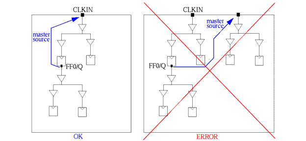
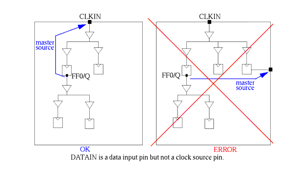
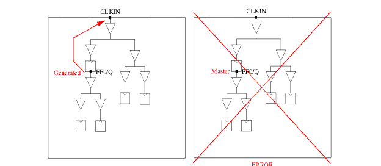
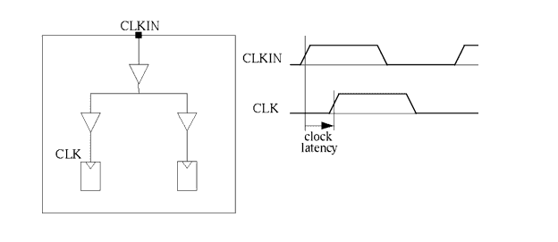
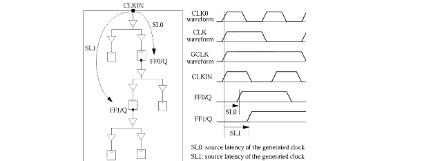
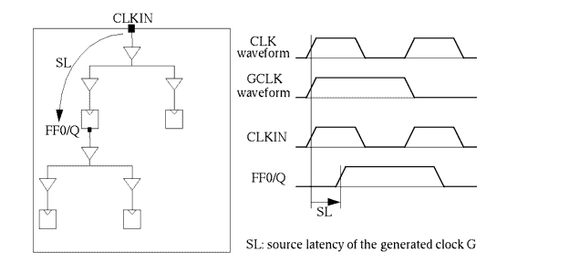
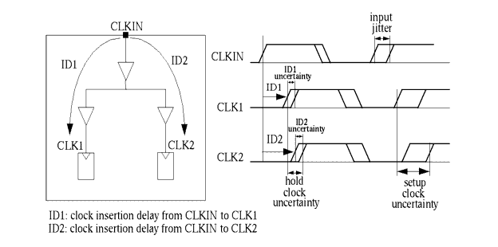
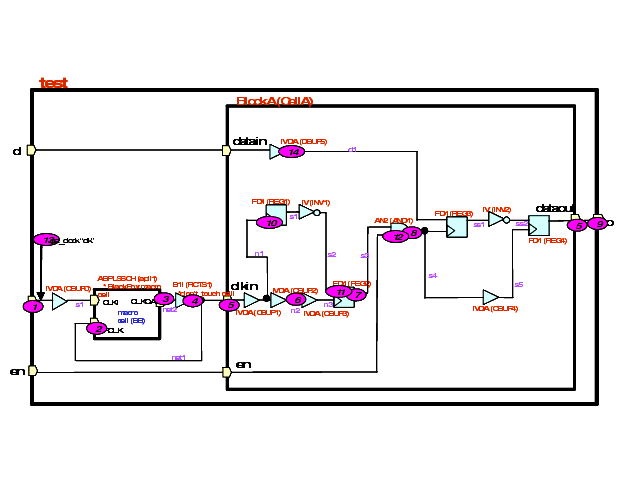
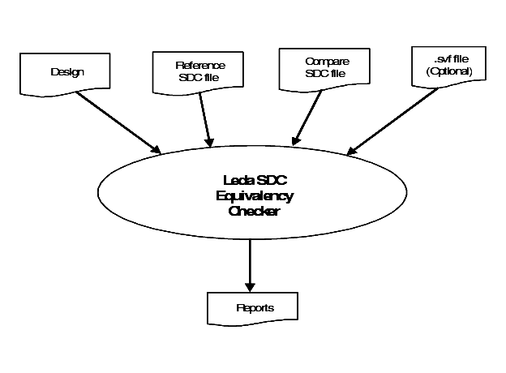

1
Constraints Coding RulesIntroduction
This chapter presents reference information for the rules contained in the Constraints policy for the Leda Checker tool. This policy specifies general-purpose rules that cover many aspects of Synopsys Design Constraint (SDC) files and their relationships to the designs that they constrain. For information on how to use the SDC checker, see the Leda User Guide.
The rules in the Constraints policy are grouped by type into the following rulesets. Each ruleset imposes constraints on different aspects of SDC file constraints (see Table 2).
Table 2: Constraints Policy Rulesets
Clocks Ruleset Rules for consistency and completeness in the usage of constraints defined with create_clock, create_generated_clock, set_propagated_clock, set_clock_transition, set_input_transition, set_driving_cell, set_clock_latency, and set_clock_uncertainty SDC file commands used to constrain real and generated clocks in the design. TVB Ruleset Rules to check for consistency in the usage of constraints between the top block and other sub blocks of a design. DFT Ruleset Ruleset includes checks associated with SDC DFT commands, used in test-mode SDC files. DRC Ruleset Rules that deal with DRC of the design. Exceptions Ruleset Ruleset includes checks related to SDC timing exceptions commands like set_false_path, set_multicycle_path, set_disable_timing etc. Inputs Ruleset Rules for consistency and completeness in the usage of set_input_delay, set_input_transition and set_driving_cell SDC commands. Naming Ruleset Rules for naming clocks, ports, and pins. Outputs Ruleset Rules for consistency and completeness in the usage of set_output_delay SDC commands. Power Ruleset Rules that deal with power of the design Structure Ruleset Rules that deal with structure of the design. Miscellaneous Ruleset Rules that are miscellaneous in nature and that does not fall under any of the above mentioned rulesets. Objects Ruleset Rules that deal with objects that should not be used with create_clock and create_generated_clock commands. Equivalency Ruleset Rules that deal with the equivalency of two SDC files. Clocks Ruleset
The following rules are from the Clocks ruleset:
SDC_CLK01
Message: Unconstrained clock. No create_clock or create_generated_clock found: %s
Description Every clock in the design must be defined in the SDC file using either a create_clock or create_generated_clock command. This information needs to be passed to synthesis and post-synthesis tools, because clocks are treated as special nets in the design flow. For example, if you don't specify a definition and other information on clock nets in your constraint file for DC, the synthesis tool may treat the clock signal like any other net, thus requiring another iteration with DC.Leda's output points to the signal inferred as a clock and the Path Viewer shows a path from this signal to a flip-flop. Policy Constraints Ruleset Clocks Language VHDL/Verilog Type SDC Severity Error
Example
This example shows a portion of an SDC file and the associated design file. Leda flags this combination as a rule violation because the SDC file does not contain a definition for the second clock in the design. Every clock has to be present in your SDC file. In this case, Leda infers a clock that has no corresponding constraint in the SDC files checked. If a register has no clock in the constraint file, Leda cannot verify paths to this register.
// SDC File create_clock -name CLK1 -period 10 [get_pins clk1] // Design File module CLK01(clk1, clk2, in1, in2, out1, out2); input clk1; input clk2; input in1, in2; output out1, out2; reg out1, out2; always @(posedge clk1) begin out1 <= in1; end always @(negedge clk2) begin out2 <= in2; end endmoduleSDC_CLK02
Message: Unused clock constraint %s
Description Unused create_clock and create_generated_clock commands in constraint files reduce performance and readability and make debugging more difficult. Policy Constraints Ruleset Clocks Language VHDL/Verilog Type SDC Severity Error
Example
This example shows a constraint file that has a create_clock command for a clock that is not used in the design. Leda flags an error for the unused clock constraint:
// SDC File create_clock -name CLK -period 2 [get_ports CLKIN] create_generated_clock -name GCLK1 -source [get_ports CLKIN] -divide_by 2 [get_pins Q0] create_generated_clock -name GCLK2 -source [get_pins Q0] -divide_by 2 [get_pins Q1] create_clock -name ECLK -period 2 [get_ports D0] # SDC_CLK02 violation--ECLK is an extra clock // Design File module CLK02(D0, D1, D2, CLKIN, Q); input D0, D1, D2, CLKIN; output Q; reg Q; reg Q0, Q1, SR0, SR1, SR2; always @(posedge CLKIN) Q0 <= D0; always @(posedge Q0) Q1 <= D1; always @(posedge Q0) SR0 <= D2; always @(posedge Q1) SR1 <= SR0; always @(posedge Q1) SR2 <= SR1; always @(posedge CLKIN) Q <= SR2; endmoduleSDC_CLK03
Message: Generated clock is not in the transitive fanout of its master clock: %s
Description Each generated clock should be driven by a master clock in the design. For each create_generated_clock command in the SDC files you check, Leda traces backward from the generated clock node in the design until the master clock node is reached. If it is never reached, Leda flags an error giving the source position of the create_generated_clock constraint, as well as the master clock and generated clock full path names. Policy Constraints Ruleset Clocks Language VHDL/Verilog Type SDC Severity Error
Example
Leda flags an error for this example because the generated clock for Q1 is not driven by the design master clock.
// SDC File create_clock -name CLK -period 5.0 -waveform {0.0 2.5} [get_ports CLKIN] create_clock -name CLK1 -period 7.0 -waveform {0.0 2.5} [get_ports CLKIN1] create_generated_clock -name GCLK1 -source [get_ports CLKIN] -divide_by 2 [get_pins Q0] create_generated_clock -name GCLK2 -source [get_ports CLKIN_1] - divide_by 2 [get_pins D0] // Design File module CLK02(D0, D1, D2, CLKIN, CLKIN_1, Q); input D0, D1, D2, CLKIN, CLKIN_1; output Q; reg Q; reg Q0, Q1, SR0, SR1, SR2; always @(posedge CLKIN) Q0 <= D0; always @(posedge Q0) Q1 <= D1; always @(posedge Q0) SR0 <= D2; always @(posedge Q1) SR1 <= SR0; always @(posedge Q1) SR2 <= SR1; always @(posedge CLKIN_1) Q <= SR2; endmoduleThe following circuit diagrams illustrate valid and invalid designs using generated clocks. Leda flags an error for rule SDC_CLK03 when it infers an error case like the one shown below.

SDC_CLK04
Message: Generated clock master is not used as clock in design
Description This rule makes sure that the pin referred to in the -source option for the create_generated_clock command is really a clock. If it isn't, Leda flags an error and points to the generated_clock declaration and the master clock (source) declaration. The Path Viewer shows the path from the generated clock to its designated master clock. Policy Constraints Ruleset Clocks Language VHDL/Verilog Type SDC Severity Error
Example
This example causes Leda to flag an error because the driver for GCLK is an input pin, but not a clock:
// SDC File create_clock -name CLK -period 5.0 -waveform {0.0 2.5} [get_ports CLKIN] create_generated_clock -name GCLK -source DATAIN -divide_by 2 [get_pins FF0/Q] # SDC_CLK04 violation--driver for GLCK not a clock // Design File module CLK04 ( D0, D1, D2, CLKIN, CLKIN1, Q ); input D0; input D1; input D2; input CLKIN; input CLKIN1; output Q; wire Q0, Q1, SR0, SR1, SR2; GTECH_FD1 Q_reg ( .D(SR2), .CP(CLKIN1), .Q(Q) ); GTECH_FD1 SR2_reg ( .D(SR1), .CP(Q1), .Q(SR2) ); GTECH_FD1 SR1_reg ( .D(SR0), .CP(Q1), .Q(SR1) ); GTECH_FD1 SR0_reg ( .D(D2), .CP(Q0), .Q(SR0) ); GTECH_FD1 Q1_reg ( .D(D1), .CP(Q0), .Q(Q1) ); GTECH_FD1 Q0_reg ( .D(D0), .CP(CLKIN), .Q(Q0) ); endmodule
SDC_CLK06
Message: Overlapping clock trees: path from clock source to leaf cell clock is not unique
Description This rule flags if there is more than one path from clock source (obtained from create_clock/create_generated_clock) to clock pins of sequential elements. Policy Constraints Ruleset Clocks Language VHDL/Verilog Type SDC Severity Error
Example
This example causes Leda to flag an error.
// SDC File create_clock -name CLK -period 10 -waveform {0 5} [get_ports clk] // Design File module mid ( c1, c2, d, q ); input c1; input c2; input d; output q; wire w5; GTECH_AND_NOT U3 ( .A(c2), .B(c1), .Z(w5) ); GTECH_FD1 q_reg ( .D(d), .CP(w5), .Q(q) ); endmodule module mSDC_CLK06 ( clk, en1, en2, d, q ); input clk; input en1; input en2; input d; output q; wire w2, w3; mid inst ( .c1(w2), .c2(w3), .d(d), .q(q) ); GTECH_AO21 U1 ( .A(en1), .B(clk), .C(w2), .Z(w3) ); GTECH_AND2 U2 ( .A(en2), .B(clk), .Z(w2) ); endmoduleSDC_CLK07
Message: Clock tree net is connected to output port without dedicated buffering
Description This rule flags violation if any net in clock tree is connected to output port without dedicated buffering. Policy Constraints Ruleset Clocks Language VHDL/Verilog Type SDC Severity Error
Example
This example causes Leda to flag an error.
// SDC File create_clock -name CLOCK1 -period 10 [get_ports CLK1] create_clock -name CLOCK2 -period 15 [get_ports CLK2] create_clock -name CLOCK3 -period 20 [get_ports CLK3] # SDC_CLK07 violation // Design File module mSDC_CLK07 (D, CLK1, CLK2, CLK3, EN, Q1, Q2, Q3, outClk1, outClk2, outClk3, outClk4); input D, CLK1, CLK2, CLK3, EN; output outClk1, outClk2, outClk3, outClk4; output Q1, Q2, Q3; reg Q1, Q2, Q3; wire w1,w2,w3; assign outClk1 = CLK1 & EN; always@(posedge outClk1) Q1 <= D; assign w1 = CLK2 | EN; always@(posedge w1) Q2 <= D; assign outClk2 = !w1; assign w2 = CLK3 & EN; buf inst0(outClk3, w2); buf inst1(w3, outClk3); always@(posedge w3) Q3 <= D; endmoduleSDC_CLK08
Message: Generated clock is a port of design: %s
Description If a generated clock is a port, then the slope on that port and the delays in the clock tree depend strongly on the load capacitance of that port. When Leda finds a violation of this rule, the output shows the generated_clock declaration, master clock (source) declaration, and the declaration of the port referenced by the constraint. The Path Viewer shows the path from port identified as a generated clock to the master clock. Policy Constraints Ruleset Clocks Language VHDL/Verilog Type SDC Severity Error
Example
This example shows an SDC file with a generated clock that is a design port.
// SDC File create_clock -name CLK -period 5.0 -waveform {0.0 2.5} [get_ports CLKIN] # SDC_CLK08 violation create_clock -name CLK -period 5.0 -waveform {0.0 2.5} [get_ports CLKIN] create_generated_clock -name GCLK1 -source [get_ports D2] -divide_by 2 [get_pins CLK08.Q] // Design File module clk08(D0, D1, CLKIN, GCLK, Q, Q1); input D0, D1, CLKIN; inout GCLK; output Q, Q1; reg Q, TMP; reg Q0, Q1; always @(posedge CLKIN) Q0 <= D0; always @(posedge GCLK) Q1 <= D1; always @(posedge Q1) TMP <= D1; always @(posedge TMP) Q <= Q0 & TMP; endmoduleSDC_CLK09
Message: Clock detected on fanin of generated clock that is not the master clock: master %s, detected %s
Description If the source pin of a clock GCLK is in the fanout of the source pin of another clock CLK, then GCLK should be generated by CLK. When Leda flags a violation of this rule, the output points to the generated_clock declaration, master clock (source) declaration, and the declaration of the port referenced by the constraint. The Path Viewer shows the path from the generated clock to the real master clock (primary input). Policy Constraints Ruleset Clocks Language VHDL/Verilog Type SDC Severity Error
Example
This example shows valid and invalid circuit diagrams relative to the SDC file.
// SDC File create_clock -name CLK -period 5.0 [get_ports CLKIN] create_generated_clock -name GCLK -source CLKIN -divide_by 2 [get_pins FF0/Q]
SDC_CLK10
Message: Clock has no set_propagated_clock constraint in post-layout: %s
Description In the post-layout timing analysis constraint file, real and generated clocks need to be set as propagated clocks (this rule does not apply to virtual clocks). Because the clock tree has already been synthesized, setting propagated clocks is necessary for accurate timing analysis. With this rule selected, Leda checks that all real and generated clocks are constrained by set_propagated_clock commands in the post-layout SDC file. Policy Constraints Ruleset Clocks Language VHDL/Verilog Type SDC Severity Error
Example
This example shows a post-layout SDC file that is missing the set_propagated_clock commands required for accurate timing analysis.
// SDC File create_clock -name CLKIN -period 10 [get_ports clk1] create_generated_clock -name GCLK1 -source clk1 [get_pins clk2] # SDC_CLK10 violation--no set_propagated_clock command in post-layout //Design File module clk10(D1, clk1, Q); input D1, clk1; output Q; reg Q, clk2; always @(posedge clk1) clk2 = D1; always @(posedge clk2) Q = 1; endmoduleSDC_CLK11
Message: set_propagated_clock defined on clock in pre-layout: %s
Description In a pre-layout SDC file, the clock tree is not yet synthesized, so setting it as propagated clock is premature. Using set_propagated_clock commands in this mode may cause the timing analysis tool to unnecessarily calculate delays for an ideal clock network. This rule applies to both real and generated clocks in pre-layout mode. Policy Constraints Ruleset Clocks Language VHDL/Verilog Type SDC Severity Error
SDC_CLK12
Message: Clock must be defined on ports or leaf cell pins, not on hierarchical ports
Description This rule flags violation if the clock is defined on a signal, which is neither port nor a leaf cell pin. Policy Constraints Ruleset Clocks Language VHDL/Verilog Type SDC Severity Error
Example
This example causes Leda to flag an error.
// SDC File create_clock -name CLK1 -period 10 [get_ports CLKIN] create_clock -name CLK2 -period 10 [get_pins Q3_reg/CP] create_clock -name CLK3 -period 10 [get_pins inst0/CP] # SDC_CLK12 violation create_generated_clock -name CLK4 -source [get_pins inst0/CP] [get_pins inst1/CP] -divide_by 2 // Design File module mSDC_CLK12 ( D0, D1, D2, CLKIN, CLKIN1, Q1, Q2, Q3 ); input D0; input D1; input D2; input CLKIN; input CLKIN1; output Q1; output Q2; output Q3; wire Q0; GTECH_FD1 Q3_reg ( .D(Q2), .CP(CLKIN1), .Q(Q3) ); mid inst1 ( .D(D2), .CP(Q1), .Q(Q2) ); flop inst0 ( .D(D1), .CP(Q0), .Q(Q1) ); GTECH_FD1 Q0_reg ( .D(D0), .CP(CLKIN), .Q(Q0) ); endmodule module mid (D, CP, Q); input D, CP; output Q; wire clk; assign clk = ~CP; flop I0 ( .D(D2), .CP(clk), .Q(Q2) ); endmodule module flop (D, CP, Q); input D, CP; output Q; reg Q; always @(posedge CP) Q <= D; endmoduleSDC_CLK13
Message: Virtual clock has no corresponding real clock with the same period and waveform
Description Every virtual clock defined in constraint file should have a real clock with same period and waveform values. Policy Constraints Ruleset Clocks Language VHDL/Verilog Type SDC Severity Error
Example
This example causes Leda to flag an error.
// SDC File create_clock -name VCLOCK0 -period 10 -waveform {5 9} create_clock -name VCLOCK1 -period 15 create_clock -name VCLOCK2 -period 20 -waveform {5 10} # SDC_CLK13 violation create_clock -name CLOCK0 -period 10 -waveform {5 10} [get_ports CLK0] create_clock -name CLOCK1 -period 10 [get_ports CLK1] create_clock -name CLOCK2 -period 20 -waveform {5 10} [get_ports CLK2] // Design File module mSDC_CLK13 (D0, D1, D2, CLK0, CLK1, CLK2, Q); input D0, D1, D2, CLK0, CLK1, CLK2; output Q; reg Q0, Q1, Q2; always @(posedge CLK0) Q0 <= D0; always @(posedge CLK1) Q1 <= D1; always @(posedge CLK2) Q2 <= D2; assign Q = Q0 | Q1 | Q2; endmoduleSDC_CLK14
Message: Incomplete clock definition: waveform and period are missing
Description Constraint file clock definitions should specify the period and waveform of the clock. This information is needed by timing analysis and synthesis tools for their internal delay calculations. Policy Constraints Ruleset Clocks Language VHDL/Verilog Type SDC Severity Error
SDC_CLK15
Message: Incomplete generated clock definition: one of -divide_by, -multiply_by, -invert, -edge_shift or -edges must be present
Description Generated clock definitions in SDC files must contain one of the options: -divide_by, -multiply_by, -invert, -edge_shift or -edge. This defines the relationship between the source and generated clocks. The absence of this information may lead to incorrect timing results during timing analysis and synthesis. Policy Constraints Ruleset Clocks Language VHDL/Verilog Type SDC Severity Error
SDC_CLK16
Message: Divided clock detected
Description This rule flags violation if there is a create_generated_clock command having -divide_by or -multiply_by option. Policy Constraints Ruleset Clocks Language VHDL/Verilog Type SDC Severity Warning
Example
This example causes Leda to flag a warning because the create_generated_clock command is having -divide_by and -multiply_by options.
// SDC File create_clock -name CLK [get_ports CLKIN] -waveform {5 10} -period 15 # SDC_CLK16 violation create_generated_clock -name GCLK1 -source [get_ports CLKIN] Q0 -divide_by 2 create_generated_clock -name GCLK2 -source Q0 -divide_by 2 Q1 -multiply_by 3 // Design File module mSDC_CLK16 (D0, D1, D2, CLKIN, Q); input D0, D1, D2, CLKIN; output Q; reg Q; reg Q0, Q1, SR0, SR1, SR2; always @(posedge CLKIN) Q0 <= D0; always @(posedge Q0) Q1 <= D1; always @(posedge Q0) SR0 <= D2; always @(posedge Q1) SR1 <= SR0; always @(posedge Q1) SR2 <= SR1; always @(posedge CLKIN) Q <= SR2; endmoduleSDC_CLK17
Message: Edge derived clock detected
Description This rule flags violation if there is a create_generated_clock command having -edges option. Policy Constraints Ruleset Clocks Language VHDL/Verilog Type SDC Severity Warning
Example
This example causes Leda to flag a warning because the create_generated_clock command is having -edges option.
// SDC File create_clock -name CLK [get_ports CLKIN] -waveform {5 10} -period 15 # SDC_CLK17 violation create_generated_clock -name GCLK1 -source [get_ports CLKIN] Q0 -edges {1 3 5} create_generated_clock -name GCLK2 -source Q0 -divide_by 2 Q1 // Design File module mSDC_CLK17 (D0, D1, D2, CLKIN, Q); input D0, D1, D2, CLKIN; output Q; reg Q; reg Q0, Q1, SR0, SR1, SR2; always @(posedge CLKIN) Q0 <= D0; always @(posedge Q0) Q1 <= D1; always @(posedge Q0) SR0 <= D2; always @(posedge Q1) SR1 <= SR0; always @(posedge Q1) SR2 <= SR1; always @(posedge CLKIN) Q <= SR2; endmoduleSDC_CLK18
Message: Unsupported options used: -add -master_clock
Description This rule flags violation if there is a create_generated_clock command having -add or -master_clock option. Policy Constraints Ruleset Clocks Language VHDL/Verilog Type SDC Severity Error
Example
This example causes Leda to flag an error because the create_generated_clock command is having -add and -master_clock option.
// SDC File create_clock -name CLK [get_ports CLKIN] -waveform {5 10} -period 15 # SDC_CLK18 violation create_generated_clock -name GCLK1 -source [get_ports CLKIN] -divide_by 2 Q0 -add create_generated_clock -name GCLK2 -source Q0 -divide_by 2 Q1 - master_clock [get_ports CLKIN] // Design File module mSDC_CLK18 (D0, D1, D2, CLKIN, Q); input D0, D1, D2, CLKIN; output Q; reg Q; reg Q0, Q1, SR0, SR1, SR2; always @(posedge CLKIN) Q0 <= D0; always @(posedge Q0) Q1 <= D1; always @(posedge Q0) SR0 <= D2; always @(posedge Q1) SR1 <= SR0; always @(posedge Q1) SR2 <= SR1; always @(posedge CLKIN) Q <= SR2; endmoduleSDC_CLK20
Message: Same clock line has multiple definitions
Description This rule fires when Leda detects multiple create_clock or create_generated_clock commands defined for the same real clock. Policy Constraints Ruleset Clocks Language VHDL/Verilog Type SDC Severity Error
SDC_CLK23
Message: Incomplete clock definition: period is missing
Description This rule flags violation if there is a create_clock command without -period option. Policy Constraints Ruleset Clocks Language VHDL/Verilog Type SDC Severity Error
Example
This example causes Leda to flag an error because create_clock command is not having -period option.
// SDC File # SDC_CLK23 violation create_clock -name VCLK create_clock -name CLK [get_ports CLKIN] -waveform {5 10} create_generated_clock -name GCLK1 -source [get_ports CLKIN] -divide_by 2 Q0 create_generated_clock -name GCLK2 -source Q0 -divide_by 2 Q1 // Design File module mSDC_CLK23 (D0, D1, D2, CLKIN, Q); input D0, D1, D2, CLKIN; output Q; reg Q; reg Q0, Q1, SR0, SR1, SR2; always @(posedge CLKIN) Q0 <= D0; always @(posedge Q0) Q1 <= D1; always @(posedge Q0) SR0 <= D2; always @(posedge Q1) SR1 <= SR0; always @(posedge Q1) SR2 <= SR1; always @(posedge CLKIN) Q <= SR2; endmoduleSDC_CTR01
Message: Missing or zero value set_clock_transition constraint for clock: %s
Description In RTL and pre-layout modes, clock transition values must be defined in the constraint file using set_clock_transition commands. Because a clock tree is ideal, the clock transition should be supplied using set_clock_transition command for timing analysis. Without information about clock transition values, you may get incorrect results in timing analysis and a design that does not optimize properly during synthesis. This rule fires for real clocks and generated clocks. Policy Constraints Ruleset Clocks Language VHDL/Verilog Type SDC Severity Error
Example
This example shows an SDC file for an RTL or pre-layout design that does not contain the required set_clock_transition commands:
// SDC File create_clock -name CLK -period 10 [get_ports clk] create_generated_clock -name GCLK -source [get_ports clk] -divide_by 2 [get_pins clk1] set_propagated_clock { CLK GCLK } # SDC_CTR01 violation for CLK // Design File module CTR01(in1, in2, clk, out); input in1, in2, clk; output out; reg out; reg clk1; always @(posedge clk) clk1 <= in1; always @(posedge clk1) out <= in2; endmoduleSDC_CTR02
Message: set_clock_transition is set on an object that is not a clock: %s
Description In RTL and pre-layout modes, clock transition values specified with set_clock_transition commands are valid for clocks. But setting clock transition values on nets that are not clocks may result in incorrect timing and synthesis results. So Leda flags errors when it finds set_clock_transition commands specified for objects that are not clocks. The output points to the object in a set_clock_transition command which does not have corresponding create_clock or create_generated_clock command. Policy Constraints Ruleset Clocks Language VHDL/Verilog Type SDC Severity Error
Example
This example shows an RTL or pre-layout SDC file that uses a set_clock_tansition command on a design object that is not a clock:
// SDC File create_clock -name CLK -period 10 [get_ports clk] create_generated_clock -name GCLK -source [get_ports clk] -divide_by 2 [get_pins clk1] set_propagated_clock { CLK GCLK } set_clock_transition 0.0 -rise {in1} # SDC_CTR02 violation--use of set_clock_transition on object that is not a clockSDC_CTR04
Message: set_annotated_transition not defined on clock pin of leaf cell
Description Get all the clock pins of leaf level cells. For each clock pin if the constraint set_annotated_transition is not set on it then flag a violation. Policy Constraints Ruleset Clocks Language VHDL/Verilog Type SDC Severity Error
SDC_CTR06
Message: Undefined clock transition for real clock: %s
Description In post-layout mode, because the clock network is synthesized, the clock transition value at the port needs to be set using an set_input_transition or set_clock_constraint command in the SDC file. Other transition values at the clock pins of registers are calculated by the timing analysis tool.Note that if you have a set_input_transition command, but no set_clock_constraint command, this rule does not fire. Policy Constraints Ruleset Clocks Language VHDL/Verilog Type SDC Severity Error
Example
This example shows part of an SDC file for post-layout mode. This SDC file causes Leda to flag an error.
// SDC File create_clock -name CLK -period 10 [get_ports clk] create_generated_clock -name GCLK -source [get_ports clk] -divide_by 2 [get_pins clk1] # SDC_CTR06 violation--no set_input_transition command for real clockTo fix this SDC file, add a command like the following:
set_input_transition 0.5 [get_ports clk]SDC_CTR08
Message: Do not use set_clock_transition in post-layout for clocks; use set_input_transition instead
Description In post-layout mode, the clock tree is synthesized and net transition values can be calculated from the synthesized netlist. Therefore, only external port transition values need to be set in post-layout mode. After the clock tree network is synthesized, the clock port needs to be treated like any other port, using set_input_transition commands to set transition values instead of set_clock_transition commands.Note that if there are both set_input_transition and set_clock_transition commands in the SDC file, this rule fires on the set_clock_transition command. Policy Constraints Ruleset Clocks Language VHDL/Verilog Type SDC Severity Error
Example
This post-layout SDC file example causes Leda to flag an error, because the clock port transition values in this mode should be set with set_input_transition commands, not set_clock_transition commands.
// SDC File create_clock -name CLK -period 10 [get_ports clk] set_clock_transition 0.0 CLK # SDC_CTR08 violation--set_clock_transition for clock signal in post- layout mode.SDC_CTR09
Message: set_input_transition and set_driving_cell on clock ports are not recommended in pre-layout
Description Generally, during the pre-layout stage, the clock net is ideal. So, using the set_input_transition and set_driving_cell commands for the clock is not recommended. Instead, use set_clock_transition commands. Leda checks this rule for both real and generated clocks in pre-layout mode. When Leda finds violations of this rule, the output points to set_input_transition and set_driving_cell commands for clocks defined using create_clock or create_generated_clock commands. Policy Constraints Ruleset Clocks Language VHDL/Verilog Type SDC Severity Error
Example
This example shows the use of a set_input_transition command for a clock in pre-layout mode, which causes Leda to flag an error.
// SDC File create_clock -name CLK -period 10 clk set_input_transition 1.0 clk # SDC_CTR09 violation--set_input_transition for clock in pre-layout mode.SDC_CTR10
Message: set_driving_cell on clock ports is not recommended in post-layout
Description In post-layout mode, Leda fires for this rule when it finds real or generated clocks set with the set_driving_cell command. The output points to set_input_transition and set_driving_cell commands for clocks defined using create_clock or create_generated_clock commands. In post-layout mode it is better to use the set_input_transition commands.Setting a drive on a clock port can create problems. With an ideal clock there is a 0 ns propagation delay and thus the drive strength is ignored; however, there is a transition delay. Since the load on the clock is large, the transition delay is huge. The non-linear delay model tables in the library are not characterized to handle such huge transition delays. As a result, there might be a negative propagation delay. Moreover, the nonlinear delay model allows a cell's output pin transition to depend on the transition on the input. The set_driving_cell command does not specify what input transition to use when calculating the port delay. Leda assumes a zero transition. This means that the port delay will be slightly optimistic for driving cells where output transition depends on input transition. Policy Constraints Ruleset Clocks Language VHDL/Verilog Type SDC Severity Error
SDC_CTR11
Message: Incomplete set_clock_transition options
Description In RTL or pre-layout mode, clock transitions should be specified using both the max and min values and both the rise and fall values to give more information to the timing analysis and synthesis tools. This rule applies to clocks and generated clocks. When Leda flags a violation of this rule, the output points to the set_clock_transition command with incomplete options. Policy Constraints Ruleset Clocks Language VHDL/Verilog Type SDC Severity Error
Example
This example SDC file for a pre-layout design shows the use of a min value without also specifying a max value for the clock.
// SDC File create_clock -name CLK -period 10 [get_ports clk] set_clock_transition 0.0 -min CLK # SDC_CTR11 violation--no max specified for clockThis next example SDC file for a pre-layout design shows the use of a rise value without also specifying a fall value for the clock.
// SDC File create_clock -name CLK -period 10 [get_ports clk] set_clock_transition 0.0 -rise CLK # SDC_CTR11 violation--no fall specified for clockSDC_CTR12
Message: Incomplete set_input_transition options
Description In post-layout mode, clock input transitions should be specified using both the max and min values and both the rise and fall values to give more information to the timing analysis and synthesis tools. This rule applies to clocks and generated clocks. When Leda flags a violation of this rule, the output points to the set_input_transition command with incomplete options. Policy Constraints Ruleset Clocks Language VHDL/Verilog Type SDC Severity Error
SDC_CTR13
Message: Inconsistent clock transition values min > max
Description This rule will flag violation if min value specified in clock transition is greater than max. Policy Constraints Ruleset Clocks Language VHDL/Verilog Type SDC Severity Error
Example
This example causes Leda to flag an error because the min value is greater than the max value in set_clock_transition and set_input_transition command.
// SDC File create_clock -name CLK -period 10 [get_ports CLKIN] create_generated_clock -name GCLK -source [get_ports CLKIN] -divide_by 2 Q1 set_clock_transition 1.5 [get_clocks GCLK] -max # SDC_CTR13 violation set_clock_transition 2.5 [get_clocks GCLK] -min set_input_transition 2.5 [get_ports CLKIN] -max # SDC_CTR13 violation set_input_transition 3.5 [get_ports CLKIN] -min // Design File module mSDC_CTR13 (D1, D2, D3, D4, CLKIN, Q1, Q2, Q3, Q4); input D1, D2, D3, D4; inout CLKIN; output Q1, Q2, Q3, Q4; reg Q1, Q2, Q3, Q4; wire tmp, Q2Bar; always @(posedge CLKIN) Q1 <= D1; assign tmp = Q1 & Q3; always @(posedge tmp) Q2 <= D2&D4; assign Q2Bar = ~Q2; always @(posedge Q2Bar) Q3 <= D3; always @(posedge Q3) Q4 <= D1; endmoduleSDC_CTR14
Message: clock and clock_fall options of set_input_transition command are not supported
Description This rule will flag violation if -clock or -clock_fall options are specified in set_input_transition. Policy Constraints Ruleset Clocks Language VHDL/Verilog Type SDC Severity Error
Example
This example causes Leda to flag an error because -clock and -clock_fall options are present.
// SDC File create_clock -name CLK -period 10 [get_ports CLKIN] create_generated_clock -name GCLK -source [get_ports CLKIN] -divide_by 2 Q1 # SDC_CTR14 violation set_input_transition 2.5 [get_clocks CLK] -clock_fall set_input_transition 1.5 [get_clocks GCLK] -clock [get_clocks CLK] // Design File module mSDC_CTR14 (D1, D2, D3, D4, CLKIN, Q1, Q2, Q3, Q4); input D1, D2, D3, D4; inout CLKIN; output Q1, Q2, Q3, Q4; reg Q1, Q2, Q3, Q4; wire tmp, Q2Bar; always @(posedge CLKIN) Q1 <= D1; assign tmp = Q1 & Q3; always @(posedge tmp) Q2 <= D2&D4; assign Q2Bar = ~Q2; always @(posedge Q2Bar) Q3 <= D3; always @(posedge Q3) Q4 <= D1; endmoduleSDC_CTR15
Message: Negative clock transition value
Description This rule flags violation if the value specified in clock transition constraint is < 0. Policy Constraints Ruleset Clocks Language VHDL/Verilog Type SDC Severity Error
Example
This example causes Leda to flag an error because the value specified in set_clock_transition command is negative.
// SDC File create_clock -name CLK -period 10 [get_ports CLKIN] create_generated_clock -name GCLK -source [get_ports CLKIN] -divide_by 2 Q1 #RTL & G-pre # SDC_CTR15 violation set_clock_transition -2.5 [get_clocks GCLK] #G-Post set_input_transition -1.5 [get_ports CLKIN] set_input_transition -1.6 [get_ports D1] // Design File module mSDC_CTR15 (D1, D2, D3, D4, CLKIN, Q1, Q2, Q3, Q4); input D1, D2, D3, D4; inout CLKIN; output Q1, Q2, Q3, Q4; reg Q1, Q2, Q3, Q4; wire tmp, Q2Bar; always @(posedge CLKIN) Q1 <= D1; assign tmp = Q1 & Q3; always @(posedge tmp) Q2 <= D2&D4; assign Q2Bar = ~Q2; always @(posedge Q2Bar) Q3 <= D3; always @(posedge Q3) Q4 <= D1; endmoduleSDC_LAT01
Message: Undefined clock latency or zero clock latency for real clocks: %s
Description In RTL or pre-layout mode, the clock latency for real clocks cannot be zero or left unspecified. To model the propagation of the clock signal through the clock tree from the root pin to the leaf pins, a latency must be defined for every clock. This is mandatory to ensure alignment between ideal and propagated clock timing analysis and the optimization environment. Policy Constraints Ruleset Clocks Language VHDL/Verilog Type SDC Severity Error
Example
This SDC file example shows a properly specified clock latency, as illustrated in the following circuit diagram.
// SDC File create_clock -name CLK -period 5.0 [get_ports CLKIN] set_clock_latency 1.5 [get_clocks CLK]
SDC_LAT02
Message: Clock latency is set on an object that is not a clock: %s
Description Setting clock latencies on design objects that are not clocks may cause problems for timing analysis and synthesis tools. Policy Constraints Ruleset Clocks Language VHDL/Verilog Type SDC Severity Error
Example
This SDC file contains examples of valid and invalid create_clock commands. Leda flags the invalid cases as errors and points to them in the Checker output.
// SDC File create_clock -name CLK -period 10 [ger_ports clk] set_clock_latency 1.0 [get_clocks clk] set_clock_latency 1.0 [get_clocks d] #Error, d is not a clock # SDC_LAT02 violation--clock latency set for object that is not a clock // Design File module ITR07 (clk, d, q); parameter nb_bit = 8; input clk; input [1: nb_bit] d; output [1: nb_bit] q; reg [1: nb_bit] q; always @(negedge clk) q = d; endmoduleSDC_LAT03
Message: Source latency for a generated clock is less than or equal to the source clock latency
Description The latency of a generated clock has to be greater than its source clock latency. Otherwise, Leda flags an error because this can cause poor quality of results from timing analysis and synthesis tools. Policy Constraints Ruleset Clocks Language VHDL/Verilog Type SDC Severity Error
Example
This SDC file example shows a properly specified clock latency for a generated clock, as illustrated in the following circuit diagram.
// SDC File create_clock -name CLK0 -period 5.0 -waveform {0.0 2.5} [get_ports CLKIN] create_generated_clock -name CLK -source [get_ports CLKIN] -divide_by 2 [get_pins FF0/Q] create_generated_clock -name GCLK -source [get_pins FF0/Q] -divide_by 2 [get_pins FF1/Q] set_clock_latency -source 1.0 [get_clocks CLK] set_clock_latency -source 2.0 [get_clocks GCLK]
SDC_LAT05
Message: Clock latency specified for post layout analysis
Description The rule will flag violation if set_clock_latency is used in constraint file for post-layout analysis. Policy Constraints Ruleset Clocks Language VHDL/Verilog Type SDC Severity Error
Example
This SDC file contains examples.
// SDC File create_clock -name CLK0 -period 5.0 -waveform {0.0 2.5} [get_ports CLKIN] create_generated_clock -name GCLK1 -source [get_ports CLKIN] -divide_by 2 Q0 create_generated_clock -name GCLK2 -source Q0 -divide_by 2 Q1 set_clock_latency 2.5 [get_clocks CLK0] set_clock_latency -source 4.0 [get_clocks GCLK1] set_clock_latency -source 2.1 [get_clocks GCLK2] # SDC_LAT05 violation // Design File module mSDC_LAT05 (D, CLKIN, CLKIN1, Q, EN); input CLKIN, CLKIN1, EN; input [0:2]D; output Q; reg Q; reg Q0, Q1, SR0, SR1, SR2; always @(posedge CLKIN) Q0 <= D[0]; wire tmp; assign tmp = Q0 & EN; always @(posedge tmp) Q1 <= D[1]; always @(posedge Q0) SR0 <= D[2]; always @(posedge Q1) SR1 <= SR0; always @(posedge Q1) SR2 <= SR1; always @(posedge CLKIN1) Q <= SR2; endmoduleSDC_LAT06
Message: Undefined source latency or zero source latency for generated clock
Description The latency for a generated clock cannot be zero; it has to be greater than the latency of its source clock. Specifying a latency for generated clocks greater than their source clocks produces better timing analysis and synthesis results. Policy Constraints Ruleset Clocks Language VHDL/Verilog Type SDC Severity Error
Example
This SDC file example shows properly specified generated clocks, as illustrated in the following circuit diagram.
// SDC File create_clock -name CLK -period 5.0 -waveform {0.0 2.5} [get_ports CLKIN] create_generated_clock -name GCLK -source [get_ports CLKIN] -divide_by 2 [get_pins FF0/Q] set_clock_latency -source 1.8 [get_clocks GCLK]
SDC_LAT07_A
Message: Incomplete set_clock_latency options: missing -min/max
Description When options such as -min/max are used with set_clock_latency commands, the counterpart options must also be present. Otherwise, Leda flags an error. The output points to the incomplete command in the SDC file checked. Policy Constraints Ruleset Clocks Language VHDL/Verilog Type SDC Severity Error SDC_LAT07_B
Message: Incomplete set_clock_latency options : missing -late/early
Description When options such as -late/early are used with set_clock_latency commands, the counterpart options must also be present. Otherwise, Leda flags an error. The output points to the incomplete command in the SDC file checked. Policy Constraints Ruleset Clocks Language VHDL/Verilog Type SDC Severity Error SDC_LAT07_C
Message: Incomplete set_clock_latency options: missing -source
Description When the -source option is not used used with set_clock_latency commands, Leda flags an error. The output points to the incomplete command in the SDC file checked. Policy Constraints Ruleset Clocks Language VHDL/Verilog Type SDC Severity Error SDC_LAT08_A
Message: Inconsistent clock latency option values - min > max
Description Leda flags an error is the minimum clock latency is greater than the maximum clock latency. Leda points to the incorrect set_clock_latency command in the output. Policy Constraints Ruleset Clocks Language VHDL/Verilog Type SDC Severity Error SDC_LAT08_B
Message: Inconsistent clock latency option values - early > late
Description Leda flags an error is the -early option is greater than the -late option in the set_clock_latency command. Leda points to the incorrect set_clock_latency command in the output. Policy Constraints Ruleset Clocks Language VHDL/Verilog Type SDC Severity Error SDC_LAT09
Message: Negative clock latency value: %d
Description Clocks should not be specified with negative latencies. Check for typos. Leda flags these errors and points to the incorrect set_clock_latency command in the output. Policy Constraints Ruleset Clocks Language VHDL/Verilog Type SDC Severity Error SDC_UNC01
Message: Undefined clock uncertainty or zero clock uncertainty (real and generated clocks)
Example
Description For every real clock, the clock uncertainty must not be zero. Otherwise, Leda flags an error. In Primetime, the hold clock uncertainty models the sum of the clock tree's inherent skew, the uncertainty on insertion delays, and a hold margin. The setup clock uncertainty models the sum of the clock tree's inherent skew, the uncertainty on insertion delays, a setup margin, and the clock's input jitter. See the following circuit diagram. Policy Constraints Ruleset Clocks Language VHDL/Verilog Type SDC Severity Error
This example shows an SDC file that is missing a set_clock_uncertainty command for CLK2:
// SDC File create_clock -name CLK1 -period 1.0 clk1 create_clock -name CLK2 -period 1.0 clk2 set_clock_uncertainty 1.0 CLK1 # SDC_UNC01 violation--no clock uncertainty set for CLK2 // Design File module simple_reg (clk1, clk2,d1,d2, q1,q2); parameter nb_bit = 8; input clk1,clk2; input [1: nb_bit] d1,d2; output [1: nb_bit] q1,q2; reg [1: nb_bit] q1,q2; always @(negedge clk1) q1 = d1; always @(negedge clk2) q2 = d2; endmodule
SDC_UNC02
Message: Clock uncertainty is set on an object that is not a clock (real and generated clocks)
Example
Description This rule checks that all design objects specified with set_clock_uncertainty commands are real or generated clocks. If not, Leda flags an error and points to the faulty command in the output. Setting clock uncertainty for design objects that are not clocks causes problems for timing analysis and synthesis tools. Policy Constraints Ruleset Clocks Language VHDL/Verilog Type SDC Severity Error
This example shows an SDC file that uses a set_clock_uncertainty command on a design object (in1), which is not a clock.
// SDC File create_clock -name CLK -period 10 [get_ports clk] set_clock_uncertainty -setup 0.65 in1 # SDC_UNC02 violation--design object not a clock // Design File module UNC02(in1, in2, clk, out); input in1, in2, clk; output out; reg out; reg clk1, clk2; always @(posedge clk) clk1 <= in1; always @(negedge clk) clk2 <= in2; always @(posedge clk1 or posedge clk2) out <= in1; endmoduleSDC_UNC04
Message: Incomplete set_clock_uncertainty options
Example
Description This rule flags violation when any of rise, fall or setup, hold option is used but the counterpart options are not present for inter-clocks. Policy Constraints Ruleset Clocks Language VHDL/Verilog Type SDC Severity Error
This example causes Leda to flag an error because -rise and -fall options are not present for the -hold option.
// SDC File create_clock -name CLK0 -period 5.0 -waveform {0.0 2.5} [get_ports CLKIN] create_clock -name CLK1 -period 7.0 -waveform {0.0 2.5} [get_ports CLKIN1] #set_clock_uncertainty -setup .45 [get_clocks CLK0] #set_clock_uncertainty -hold .35 [get_clocks D1] set_clock_uncertainty -setup -rise 1.2 -from CLK0 -to CLK1 set_clock_uncertainty -setup -fall 1.3 -from CLK0 -to CLK1 # SDC_UNC04 violation--missing -rise, -fall for hold option // Design File module mSDC_UNC04(D0, D1, D2, CLKIN, CLKIN1, Q2, Q3); input D0, D1, D2, CLKIN, CLKIN1; output Q2, Q3; reg Q0, Q1, Q2, Q3; always @(posedge CLKIN) Q0 <= D0; always @(posedge Q0) Q1 <= D1; always @(posedge Q1) Q2 <= D2; always @(posedge CLKIN1) Q3 <= Q2; endmoduleSDC_UNC05
Message: Negative clock uncertainty value: %d
Example
Description Specifying negative clock uncertainty values causes problems for timing analysis and synthesis tools. Leda flags these as errors and points to the faulty set_clock_uncertainty commands in the output. Policy Constraints Ruleset Clocks Language VHDL/Verilog Type SDC Severity Error
This example shows an SDC file that specified a negative clock uncertainty value.
// SDC File create_clock -name CLK -period 10 [get_ports clk] set_clock_uncertainty -setup -0.65 CLK # SDC_UNC05 violation--negative clock uncertainty // Design File module UNC05(in1, in2, clk, out); input in1, in2, clk; output out; reg out; reg clk1, clk2; always @(posedge clk) clk1 <= in1; always @(negedge clk) clk2 <= in2; always @(posedge clk1 or posedge clk2) out <= in1; endmoduleTVB Ruleset
The following rules are from the Top versus Block (TVB) ruleset:
SDC_TOP01
Message: Block level clock constraint is inconsistent with top level clock constraint
Description This rule checks if the top level clock constraint has a period equal to the period associated with the corresponding block level clock constraint. It also checks if the top-level waveform is exactly equivalent to the corresponding block-level waveform. This rule also takes into consideration the divide_by and multiply_by options on a create_generated_clock command. Policy Constraints Ruleset TVB Language VHDL/Verilog Type SDC Severity Error
Example
This example causes Leda to issue an error message because the period of the top-level clock constraint is not the same as the period of the block-level clock constraint.
// SDC File //Top-level constraints: create_clock -name "CLK_t" -period 5.0 [get_ports CLK_t] create_generated_clock -name "CLK_g" -divide_by 2 -source CLK_t [get_pins div/clk] //Block-level constraints for block_1: create_clock -name "BCLK1" -period 6.0 -waveform {0 3} [get_ports BCLK1] //Block-level constraints for block_2: create_clock -name "BCLK2" -period 12.0 -waveform {0 6}[get_ports BCLK2] # SDC_TOP01 violation because of inconsistency of period between top and block_1 and between top and block_2SDC_TOP02
Message: Block level I/O delay constraint is inconsistent with top level delay constraint
Description This rule checks that the input constraints at the block-level are consistent with top-level constraints. The input delay for block must be greater than or equal to any input delay for a top-level port in the fanin cone of that block input. The output delay for block must be greater than or equal to any output delay for a top-level port in the fanout cone from that block output. Policy Constraints Ruleset TVB Language VHDL/Verilog Type SDC Severity Error
Example
This example causes Leda to issue an error message because the input delay and output delay constraints of top-level and block-level are inconsistent.
// SDC File //Top-level constraints: create_clock -name "CLK_t" -period 5.0 -waveform {0 2.5} [get_ports CLK_t] create_generated_clock -name "CLK_g" -divide_by 2 -source CLK_t [get_pins div/clk] set_input_delay 2.5 -clock CLK_t [et_ports IN1] set_output_delay 2.5 -clock CLK_g [get_ports OUT1] //Block-level constraints for block_1: Input IN1 reaches block input B1_IN1 create_clock -name "BCLK1" -period 5.0 -waveform {0 2.5} BCLK1 set_input_delay 2.0 -clock CLK_t [get_ports B1_IN1] //Block-level constraints for block_2: Output B1_OUT1 reaches top-level output OUT1 create_clock -name "BCLK2" -period 10.0 -waveform {0 5} BCLK2 set_output_delay 2.0 -clock CLK_g [get_ports B1_OUT1] // 2 violations of SDC_TOP02 will be flagged // For input B1_IN1 and IN1: The value for top is greater than block_1 // For output B1_OUT1 and OUT1: The value for top is greater than block_2SDC_TOP03
Message: Block level false path constraint is inconsistent with top level false path constraint
Description This rule checks that the top-level false path constraint is consistent with the block-level false path constraint. A path that is defined as false at the block-level should also be a false path at the top level. Policy Constraints Ruleset TVB Language VHDL/Verilog Type SDC Severity Error
Example
This example shows a test case that does not violate this rule.
// SDC File //If a clock is specified in the false_path at the block level, then the //top-level should also have a similar constraint and the top-level //clock should drive the block-level clock. //At the block level consider the following: create_clock -name "BCLK1" -period 6 -waveform {0 3} BCLK1 set_false_path -from [get_clocks BCLK1] -to [get_ports B1_OUT1] //The top level should have the following create_clock -name "Clk_t" -period 5.0 [get_ports Clk_t] set_false_path -from [get_clocks Clk_t] -to [get_pins BA/B1_OUT1]SDC_TOP04
Message: Block level multicycle path constraint is inconsistent with top level multicycle path constraint
Description This rule checks that the top-level multicycle path constraint is consistent with the block-level multicycle path constraint. A path that is defined as multicycle at the block-level should also be a multicycle path at the top level. Policy Constraints Ruleset TVB Language VHDL/Verilog Type SDC Severity Error
Example
This example shows a test case that does not violate this rule.
// SDC File //If a clock is specified in the multicycle path at the block level, then the top-level should also have a similar constraint and the top- level clock should drive the block-level clock. //At the block level consider the following: create_clock -name "BCLK1" -period 6 -waveform {0 3} BCLK1 set_multicycle_path -from [get_clocks BCLK1] -to [get_ports B1_OUT1] //The top level should have the following create_clock -name "Clk_t" -period 5.0 [get_ports Clk_t] set_multicycle_path -from [get_clocks Clk_t] -to [get_pins BA/B1_OUT1]SDC_TOP20
Message: Block level max/min delay constraint is inconsistent with top level max/min delay constraint
Description This rule checks that a set_max/min_delay constraint at the block level is consistent with the corresponding top-level constraint. This rule reports a violation if there is a combinational path on top that goes through block(s) and these block(s) have set_max/min_delay and there is no corresponding set_max/min_delay for the top. Policy Constraints Ruleset TVB Language VHDL/Verilog Type SDC Severity Error
Example
This example shows a test case that does not violate this rule.
// SDC File // Top-level constraint set_max_delay 2.5 -from { IN1 } // Block-level constraint: // Assume the top-level port goes through instance BA of block and the // block has the following constraint set_max_delay 1.0 -from { B1_IN1 }DFT Ruleset
The following rules are from the DFT ruleset:
SDC_DFT01
Message: Undefined test_scan_enable port
Description set_scan_configuration command is specified, then depending on "-existing_scan" option value of this command, test_scan_enable pin should be specified using set_scan_signal or set_signal_type command respectively. Policy Constraints Ruleset DFT Language VHDL/Verilog Type SDC Severity Warning
Example
This example causes Leda to flag a warning because undefined test_scan_enable ports are present.
// SDC File create_clock -name CLK1 -period 10 [get_ports clk1] create_clock -name CLK2 -period 10 [get_ports clk2] set_scan_configuration -existing_scan true #set_signal_type "test_scan_enable" in1 # SDC_DFT01 violation set_signal_type "test_scan_in" in2 set_signal_type "test_scan_out" in1 // Design File module mSDC_DFT01 (); endmoduleSDC_DFT02
Message: Undefined test_scan_in port
Description set_scan_configuration command is specified, then depending on "-existing_scan" option value of this command, test_scan_in pin should be specified using set_scan_signal or set_signal_type command respectively. Policy Constraints Ruleset DFT Language VHDL/Verilog Type SDC Severity Warning
Example
This example causes Leda to flag a warning.
// SDC File create_clock -name CLK1 -period 10 [get_ports clk1] create_clock -name CLK2 -period 10 [get_ports clk2] # SDC_DFT02 violation set_scan_configuration -existing_scan true set_signal_type "test_scan_enable" in1 #set_signal_type "test_scan_in" in2 set_signal_type "test_scan_out" in1 // Design File module mSDC_DFT02(clk1, clk2, in1, in2, out1, out2, out3, out4, out5, out6, out7); input clk1; input clk2; input in1, in2; output out1, out2,out3, out4, out5, out6 , out7; reg out1, out2,out3, out4, out5, out6, out7; wire w2; assign w2 = clk2; always @(posedge clk1) begin out1 <= in1; end always @(negedge clk2) begin out2 <= in2; end always out3 <= clk1; always out4 <= ~clk2; BUF U1(clk1,out5); always@(w2) out6 <= w2; always@(w2) out7 <= clk2; endmodule module BUF(in1, out1); input in1; output out1; wire in1; reg out1; wire w1; assign w1 = in1; always @(w1) out1 <= w1; endmoduleSDC_DFT03
Message: Undefined test_scan_out port
Description set_scan_configuration command is specified, then depending on "-existing_scan" option value of this command, test_scan_out pin should be specified using set_scan_signal or set_signal_type command respectively. Policy Constraints Ruleset DFT Language VHDL/Verilog Type SDC Severity Warning
Example
This example causes Leda to flag a warning.
// SDC File create_clock -name CLK1 -period 10 [get_ports clk1] create_clock -name CLK2 -period 10 [get_ports clk2] # SDC_DFT03 violation set_scan_configuration -existing_scan true set_signal_type "test_scan_enable" in1 set_signal_type "test_scan_in" in2 #set_signal_type "test_scan_out" in1 // Design File module mSDC_DFT03(clk1, clk2, in1, in2, out1, out2, out3, out4, out5, out6, out7); input clk1; input clk2; input in1, in2; output out1, out2,out3, out4, out5, out6 , out7; reg out1, out2,out3, out4, out5, out6, out7; wire w2; assign w2 = clk2; always @(posedge clk1) begin out1 <= in1; end always @(negedge clk2) begin out2 <= in2; end always out3 <= clk1; always out4 <= ~clk2; BUF U1(clk1,out5); always@(w2) out6 <= w2; always@(w2) out7 <= clk2; endmodule module BUF(in1, out1); input in1; output out1; wire in1; reg out1; wire w1; assign w1 = in1; always @(w1) out1 <= w1; endmoduleSDC_DFT04
Message: Undefined scan configuration
Description A set_scan_configuration command should be present in test mode SDC files, as it tells the tool nature of test scan chain present or to be created. Policy Constraints Ruleset DFT Language VHDL/Verilog Type SDC Severity Warning
Example
This example causes Leda to flag a warning.
// SDC File create_clock -name CLK1 -period 10 [get_ports clk1] create_clock -name CLK2 -period 10 [get_ports clk2] # SDC_DFT04 violation #set_scan_configuration -existing_scan true set_signal_type "test_scan_enable" in1 set_signal_type "test_scan_in" in2 set_signal_type "test_scan_out" in1 // Design File module mSDC_DFT04(clk1, clk2, in1, in2, out1, out2, out3, out4, out5, out6, out7); input clk1; input clk2; input in1, in2; output out1, out2,out3, out4, out5, out6 , out7; reg out1, out2,out3, out4, out5, out6, out7; wire w2; assign w2 = clk2; always @(posedge clk1) begin out1 <= in1; end always @(negedge clk2) begin out2 <= in2; end always out3 <= clk1; always out4 <= ~clk2; BUF U1(clk1,out5); always@(w2) out6 <= w2; always@(w2) out7 <= clk2; endmodule module BUF(in1, out1); input in1; output out1; wire in1; reg out1; wire w1; assign w1 = in1; always @(w1) out1 <= w1; endmoduleDRC Ruleset
The following rules are from the DRC ruleset:
SDC_IDR01
Message: Undefined set_max_capacitance on input or inout ports
Description This rule will flag violation if set_max_capacitance is not constraint on an input or inout port. Policy Constraints Ruleset DRC Language VHDL/Verilog Type SDC Severity Warning
Example
This example causes Leda to flag an error.
// SDC File create_clock -name CLK -period 5.0 -waveform {0.0 2.5} [get_ports CLKIN] create_clock -name CLK1 -period 15.0 -waveform {0.0 2.5} [get_ports CLKIN1] # SDC_IDR01 violation set_max_capacitance 2.5 D0 set_input_delay 2.5 D1 -clock [get_clocks CLK] // Design File module mSDC_IDR01 (D0, D1, D2, CLKIN, CLKIN1, Q, EN, SR2); input CLKIN, CLKIN1, EN; input D0, D1, D2; output Q, SR2; reg Q; reg Q0, Q1, SR0, SR1, SR2; always @(posedge CLKIN) Q0 <= D0; wire tmp; assign tmp = Q0 & EN; always @(posedge tmp) Q1 <= D1; always @(posedge Q0) SR0 <= D2; always @(posedge Q1) SR1 <= SR0; always @(posedge Q1) SR2 <= SR1; always @(posedge CLKIN1) Q <= SR2; endmoduleSDC_ODR01
Message: Undefined set_max_capacitance on output or inout ports
Example
Description This rule will flag violation if set_max_capacitance is not constraint on an output or inout port. Policy Constraints Ruleset DRC Language VHDL/Verilog Type SDC Severity Warning
This example causes Leda to flag a warning.
// SDC File create_clock -period 5.0 -waveform {0.0 2.5} [get_ports CLKIN] create_generated_clock -name Q0 -source CLK0 -divide_by 2 Q0 create_generated_clock -name GCLK2 -source GCLK1 -divide_by 2 Q1 set_clock_latency -source 2.5 [get_clocks CLK0] set_clock_latency -source 4.0 [get_clocks GCLK1] set_clock_latency -source 2.1 [get_clocks GCLK2] # SDC_ODR01 violation set_max_capacitance 2.5 Q // Design File module mSDC_ODR01 (D, CLKIN, CLKIN1, Q, EN, SR2); input CLKIN, CLKIN1, EN; input [0:2]D; output Q, SR2; reg Q; reg Q0, Q1, SR0, SR1, SR2; always @(posedge CLKIN) Q0 <= D[0]; wire tmp; assign tmp = Q0 & EN; always @(posedge tmp) Q1 <= D[1]; always @(posedge Q0) SR0 <= D[2]; always @(posedge Q1) SR1 <= SR0; always @(posedge Q1) SR2 <= SR1; always @(posedge CLKIN1) Q <= SR2; endmodule
Exceptions Ruleset
The following rules are from the Exceptions ruleset:
SDC_CMB01
Message: Unconstrained input/output/max/min delay for combinational path -from %s -to %s
Description This rule will flag violation if a combinational path is not constrained using set_max_delay and set_min_delay. Policy Constraints Ruleset Exceptions Language VHDL/Verilog Type SDC Severity Error
Example
This example causes Leda to flag an error because input/output delay values is not specified for a combinational path.
// SDC File create_clock -name CLK1 -period 5.0 -waveform {0.0 2.5} CLKIN create_clock -name CLK2 -period 5.0 -waveform {0.0 2.5} [get_ports Q0] # SDC_CMB01 violation set_input_delay 2.0 [get_ports sel] set_input_delay 2.0 [get_ports D2] set_output_delay 2.0 [get_ports Q] set_max_delay 5.0 -from [get_ports sel] -to [get_ports Q] set_max_delay 5.0 -from [get_ports D2] -to [get_ports Q] // Design File module mSDC_CMB01 (D4, D0, D1, D2, sel, CLKIN, Q); input D0, D1, D2, CLKIN, sel, D4; output Q; wire Q; wire andwire, muxwire, muxwirebar; reg tmp, Q0; assign andwire = ~D0 & D1; always @(posedge CLKIN) Q0 <= andwire; always @(posedge Q0) tmp <= D4; assign muxwire = sel? tmp : D2; assign muxwirebar = ~muxwire; assign Q = muxwirebar; endmoduleSDC_CMB02
Message: Inconsistent set_max_delay/set_min_delay delay value for combinational path: min > max
Description This rule will flag violation if set_min_delay > set_max_delay value for a combinational path. Policy Constraints Ruleset Exceptions Language VHDL/Verilog Type SDC Severity Error
Example
This example causes Leda to flag an error because set_min_delay value is greater than set_max_delay for a combinational path.
// SDC File create_clock -name CLK1 -period 5.0 -waveform {0.0 2.5} CLKIN create_clock -name CLK2 -period 5.0 -waveform {0.0 2.5} Q0 # SDC_CMB02 violation set_min_delay 5.0 -from [get_ports D0] -to [get_ports Q] set_max_delay 4.0 -from [get_ports D0] -to [get_ports Q] set_min_delay 5.0 -from [get_ports D1] -to [get_ports Q] set_max_delay 6.0 -from [get_ports D1] -to [get_ports Q] set_min_delay 4.0 -from [get_ports D1] -through {tmp} -to [get_ports Q] set_max_delay 5.0 -from [get_ports D1] -through [get_ports tmp] -to [get_ports Q] set_max_delay 5.0 -to [get_ports tmp] set_min_delay 7.0 -through [get_ports Q0] set_min_delay 8.0 -from {D1 CLKIN} -to {tmp Q} set_max_delay 6.0 -from {CLKIN D1} -to {Q tmp} set_max_delay 10.0 -from [get_clocks CLK1] -to [get_ports Q] set_min_delay 11.0 -from [get_clocks CLK1] -to {Q} // Design File module mSDC_CMB02 (D4, D0, D1, D2, sel, CLKIN, Q); input D0, D1, D2, CLKIN, sel, D4; output Q; wire Q; wire andwire, muxwire, muxwirebar; reg tmp, Q0; assign andwire = ~D0 & D1; always @(posedge CLKIN) Q0 <= andwire; always @(posedge Q0) tmp <= D4; assign muxwire = sel? tmp : D2; assign muxwirebar = ~muxwire; assign Q = muxwirebar; endmoduleSDC_CMB03
Message: Inconsistent input/output delay value vs. clock period for combinational path
Description For a combinational path, set_input_delay and set_output_delay values are set with respect to virtual clock. This rule will flag violation if input delay + output delay > virtual_clock_period. It also flag violation if -min > -max in case of both input delay and output delay. Policy Constraints Ruleset Exceptions Language VHDL/Verilog Type SDC Severity Error
Example
This example causes Leda to flag an error.
// SDC File create_clock -name CLK1 -period 5.0 -waveform {0.0 2.5} [get_ports CLKIN] create_generated_clock -name CLK2 -multiply_by 2 -source CLKIN Q0 create_generated_clock -name CLK3 -divide_by 2 -source CLKIN [get_ports CLKIN1] create_generated_clock -name CLK4 -divide_by 2 -source CLKIN1 [get_ports CLKIN2] set_input_delay 1.0 -clock [get_clocks CLK1] [get_ports sel] set_output_delay 4.0 -clock [get_clocks CLK1] [get_ports Q] set_input_delay 2.5 -clock [get_clocks CLK1] [get_ports D2] # SDC_CMB03 violation set_input_delay 2.5 -clock [get_clocks CLK2] [get_ports sel] set_output_delay 8.0 -clock [get_clocks CLK2] [get_ports Q] set_input_delay 1.5 -clock [get_clocks CLK2] [get_ports D2] set_input_delay 1.4 -clock [get_clocks CLK3] [get_ports sel] set_output_delay 1.0 -clock [get_clocks CLK3] [get_ports Q] set_input_delay 1.6 -clock [get_clocks CLK3] [get_ports D2] set_input_delay 0.26 -clock [get_clocks CLK4] [get_ports sel] set_output_delay 1.0 -clock [get_clocks CLK4] [get_ports Q] set_input_delay 0.24 -clock [get_clocks CLK4] [get_ports D2] // Design File module mSDC_CMB03 (D4, D0, D1, D2, sel, CLKIN, CLKIN1, CLKIN2, Q); input D0, D1, D2, CLKIN, CLKIN1, CLKIN2, sel, D4; output Q; wire Q; wire andwire, muxwire, muxwirebar; reg tmp, Q0; assign andwire = ~D0 & D1; always @(posedge CLKIN) Q0 <= andwire; always @(posedge Q0) tmp <= D4; assign muxwire = sel? tmp : D2; assign muxwirebar = ~muxwire; assign Q = muxwirebar; endmoduleSDC_CMB04
Message: Incomplete set_max_delay/set_min_delay options for combinational path: -rise must be used with -fall
Description This rule will flag violation if -fall option is not used along with -rise option while specifying input delay and output delay for a combinational path. Policy Constraints Ruleset Exceptions Language VHDL/Verilog Type SDC Severity Error
Example
This example causes Leda to flag an error because -fall is not used with -rise option for a combinational path.
// SDC File create_clock -name CLK1 -period 5.0 -waveform {0.0 2.5} CLKIN create_clock -name CLK2 -period 5.0 -waveform {0.0 2.5} Q0 set_min_delay 5.0 -rise -from [get_ports D0] -to [get_ports Q] set_min_delay 5.0 -fall -from [get_ports D0] -to [get_ports Q] set_min_delay 5.0 -fall -from [get_ports D1] -to [get_ports Q] set_min_delay 5.0 -rise -from [get_ports D1] -to [get_ports Q] set_min_delay 5.0 -rise -from [get_ports D1] -through {tmp} -to [get_ports Q] set_min_delay 5.0 -fall -from [get_ports D1] -through [get_ports tmp] - to [get_ports Q] set_min_delay 5.0 -rise -from [get_ports CLKIN] -to [get_ports Q] set_min_delay 5.0 -fall -from [get_ports CLKIN] -through [get_ports tmp] -to [get_ports Q] set_min_delay 5.0 -rise -to [get_ports tmp] set_min_delay 5.0 -fall -through [get_ports Q0] set_min_delay 5.0 -rise -from {D1 CLKIN} -to {tmp Q} set_min_delay 5.0 -fall -from {CLKIN D1} -to {Q tmp} set_max_delay 5.0 -rise -from [get_ports D0] -to [get_ports Q] set_max_delay 5.0 -fall -from [get_ports D0] -to [get_ports Q] set_max_delay 5.0 -fall -from [get_ports D1] -to [get_ports Q] set_max_delay 5.0 -rise -from [get_ports D1] -to [get_ports Q] set_max_delay 5.0 -rise -from [get_ports D1] -through [get_ports tmp] - to [get_ports Q] set_max_delay 5.0 -fall -from [get_ports D1] -through [get_ports tmp] - to [get_ports Q] set_max_delay 5.0 -rise -from [get_ports CLKIN] -to [get_ports Q] set_max_delay 5.0 -fall -from [get_ports CLKIN] -through [get_ports tmp] -to [get_ports Q] set_max_delay 5.0 -rise -to [get_ports tmp] set_max_delay 5.0 -fall -through [get_ports Q0] set_max_delay 5.0 -rise -from {D1 CLKIN} -to {tmp Q} set_max_delay 5.0 -fall -from {CLKIN D1} -to {Q tmp} set_max_delay 5.0 -rise -from [get_clocks CLK1] set_min_delay 5.0 -rise -from [get_clocks CLK2] # SDC_CMB04 violation set_max_delay 6.0 -fall -from [get_clocks CLK1] // Design File module mSDC_CMB04 (D4, D0, D1, D2, sel, CLKIN, Q); input D0, D1, D2, CLKIN, sel, D4; output Q; wire Q; wire andwire, muxwire, muxwirebar; reg tmp, Q0; assign andwire = ~D0 & D1; always @(posedge CLKIN) Q0 <= andwire; always @(posedge Q0) tmp <= D4; assign muxwire = sel? tmp : D2; assign muxwirebar = ~muxwire; assign Q = muxwirebar; endmoduleSDC_CMB05
Message: Combinational constraints present on elements belonging to internal sequential path
Description This rule will flag violation if set_min_delay and set_max_delay constraint command is used for sequential paths. Policy Constraints Ruleset Exceptions Language VHDL/Verilog Type SDC Severity Error
Example
This example causes Leda to flag an error because set_min_delay and set_max_delay constraint command is used for sequential path.
// SDC File create_clock -name CLK -period 5.0 -waveform {0.0 2.5} CLKIN set_max_delay 5.0 -from [get_ports sel] -to [get_ports Q] set_max_delay 5.0 -from [get_ports D2] -to [get_ports Q] set_min_delay 4.0 -from {Q0 D4} -to [get_ports Q] set_min_delay 4.0 -from {tmp} -to {muxwirebar} set_min_delay 4.0 -from {D0 sel D2} -to {muxwirebar muxwire} set_min_delay 4.0 -from {tmp sel D2} -to {muxwirebar muxwire} # SDC_CMB05 violation set_max_delay 5.0 -from [get_clocks CLK] -to [get_ports Q] // Design File module mSDC_CMB05 (D4, D0, D1, D2, sel, CLKIN, Q); input D0, D1, D2, CLKIN, sel, D4; output Q; reg Q; wire andwire, muxwire, muxwirebar; reg tmp, Q0; assign andwire = ~D0 & D1; always @(posedge CLKIN) Q0 <= andwire; always @(posedge Q0) tmp <= D4; assign muxwire = sel? tmp : D2; assign muxwirebar = ~muxwire; always @(posedge Q0) Q <= muxwirebar; endmoduleSDC_DIS03
Message: Disable timing reference cells/points don't exist
Description Design objects referred in set_disable_timing command does not exist in design. Policy Constraints Ruleset Exceptions Language VHDL/Verilog Type SDC Severity Error
Example
This example causes Leda to flag an error because the object referred in set_disable_timing command is not present in the design.
// SDC File # SDC_DSC03 violation create_clock -name CLK1 -period 5.0 -waveform {0.0 2.5} CLKIN set_disable_timing {A1} #none of the points exist set_disable_timing [get_ports Q] // Design File module mSDC_DIS03 (D4, D0, D1, D2, sel, CLKIN, Q); input D0, D1, D2, CLKIN, sel, D4; output Q; reg Q; wire andwire, muxwire, muxwirebar; reg tmp, Q0; assign andwire = ~D0 & D1; always @(posedge CLKIN) Q0 <= andwire; always @(posedge Q0) tmp <= D4; assign muxwire = sel? tmp : D2; assign muxwirebar = ~muxwire; always @(posedge Q0) Q <= muxwirebar; endmoduleSDC_DIS04
Message: The timing arc(s) disabled belongs to clock path %s
Description set_disable_timing arc is part of clock net, so it will disturb timing calculations in prelayout/postlayout timing analysis. It does not have any effect as clock is treated as ideal in RTL level. Policy Constraints Ruleset Exceptions Language VHDL/Verilog Type SDC Severity Error
SDC_FLP01
Message: False path reference points do not exist %s or are not connected. From %s to %s [through %s]
Description In all modes, false paths specified with set_false_path commands must refer to real design signals, and should be specified with from and to points so that the timing analysis and synthesis tools have all the needed information. Policy Constraints Ruleset Exceptions Language VHDL/Verilog Type SDC Severity Error
SDC_FLP02
Message: False path is not applicable to hierarchical ports %s
Description None. Policy Constraints Ruleset Exceptions Language VHDL/Verilog Type SDC Severity Error
Example
This example causes Leda to flag an error.
// SDC File create_clock -name CLK1 -period 5.0 -waveform {0.0 2.5} CLKIN create_clock -name CLK2 -period 5.0 -waveform {0.0 2.5} {INST1/INST/D} # SDC_FLP02 violation set_false_path -from {D0} -to {Q} -through {tmp} set_false_path -from [get_ports D0] -to [get_ports D2] -through {tmp} set_false_path -from {D4} -to {Q} -through {muxwire} set_false_path -from {D0 D4} -to {Q} -through {tmp} set_false_path -from {D0 D4} -to {Q} -through {andwire} set_false_path -from {D0 D4} -to {Q} set_false_path -from {INST/D} -to {Q} set_false_path -from {INST1/INST/D} -to {Q} set_false_path -from [get_clocks CLK2] -to {Q} set_false_path -from {INST1/Q1} -to {Q} // Design File module mymodule (D, Q, CLK); input D, CLK; output Q; reg Q; initial begin Q <= D; end endmodule module mymodule1 (D1, Q1, CLK1); input D1, CLK1; output Q1; reg Q1; initial begin Q1 <= D1; end mymodule INST (.D(D1), .Q(Q1), .CLK(CLK1)); endmodule module mSDC_FLP02 (D4, D0, D1, D2, sel, CLKIN, Q); input D0, D1, D2, CLKIN, sel, D4; output Q; reg Q; wire andwire, muxwire, muxwirebar; reg tmp, Q0; assign andwire = ~D0 & D1; always @(posedge CLKIN) Q0 <= andwire; always @(posedge Q0) tmp <= D4; assign muxwire = sel? tmp : D2; assign muxwirebar = ~muxwire; always @(posedge Q0) Q <= muxwirebar; mymodule INST (.D(D0), .Q(Q), .CLK(CLKIN)); mymodule1 INST1 (.D1(D0), .Q1(Q), .CLK1(CLKIN)); endmoduleSDC_FLP06
Message: Inter clock domain false path not applied %s
Description This rule is a parameterized rule where user needs to explicitly specify which clocks are asynchronous using the parameter ASYNC_CLOCKS. The default value of the rule parameter is {CLK, CLK1}.rule_set_parameter -rule SDC_FLP06 -parameter ASYNC_CLOCKS -value {CLK, CLK1}You can overwrite this rule parameter to specify the asynchronous clock set. When there are several asynchronous clocks in the design for example, CLK1, CLK2, CLK3, CLK4 then the parameter value can be specified as follows:rule_set_parameter -rule SDC_FLP06 -parameter ASYNC_CLOCKS -value {CLK1, CLK2, CLK3, CLK4}When there are several synchronous and asynchronous clocks for example, a set of clocks CLK1, CLK2, CLK3, CLK4 CLK1 <-> CLK2 - synchronousCLK1 <-> CLK3 | CLK4 - asynchronous CLK2 <-> CLK3 | CLK4 - asynchronousCLK3 <-> CLK4 - asynchronousthen the parameter value can be specified as shown below:rule_set_parameter -rule SDC_FLP06 -parameter ASYNC_CLOCKS -value {{CLK1, CLK3, CLK4}, {CLK2, CLK3, CLK4}}This rule expects a false path to be set between all asynchronous clocks irrespective of data crossing exists or not. Policy Constraints Ruleset Exceptions Language VHDL/Verilog Type SDC Severity Error
Example
This example causes Leda to flag an error.
// SDC File create_clock -name CLK -period 5.0 -waveform {0.0 2.5} [get_ports CLKIN] create_generated_clock -name CLK1 -divide_by 2 -source CLKIN [get_ports Q] create_clock -name CLK2 -period 5.0 -waveform {0.0 2.5} [get_ports CLKIN1] create_generated_clock -name CLK3 -divide_by 2 -source CLKIN1 [get_ports sel] # SDC_FLP06 violation set_false_path -from [get_clocks CLK] -to [get_clocks CLK1] set_false_path -from {CLK2} -to {CLK3} // Design File module mSDC_FLP06 (D4, D0, D1, D2, sel, CLKIN, CLKIN1, Q); input D0, D1, D2, CLKIN, CLKIN1, sel, D4; output Q; reg Q; wire andwire, muxwire, muxwirebar; reg tmp, Q0, Dim; assign andwire = ~D0 & D1; always @(posedge CLKIN) Q0 <= andwire; always @(posedge Q0) tmp <= D4; assign muxwire = sel? tmp : D2; assign muxwirebar = ~muxwire; always @(posedge CLKIN1) Dim <= muxwirebar; always @(posedge Q0) Q <= Dim; endmoduleSDC_FLP21
Message: False path has been set between registers belonging to same clock domain
Description Generally false path is set between registers belonging to different domains (asynchronous clocks). Hence this check. Policy Constraints Ruleset Exceptions Language VHDL/Verilog Type SDC Severity Error
Example
This example causes Leda to flag an error.
// SDC File create_clock -name CLK1 -period 5.0 -waveform {0.0 2.5} [get_ports CLKIN] create_generated_clock -name CLK2 -divide_by 2 -source CLKIN {Q0} create_generated_clock -name CLK3 -divide_by 3 -source CLKIN [get_ports CLKIN1] # SDC_FLP21 violation set_false_path -from [get_clocks CLK1] -to tmp set_false_path -from [get_ports CLKIN] -to tmp set_false_path -from Q0 -to [get_ports Q] set_false_path -from tmp -to muxwirebar set_false_path -from Q0 -to tmp set_false_path -from tmp1 -to Q1 // Design File module mSDC_FLP21 (D4, D0, D1, D2, sel, CLKIN, CLKIN1, Q); input D0, D1, D2, CLKIN, CLKIN1, sel, D4; output Q; reg Q; wire andwire, muxwire, muxwirebar; reg tmp, Q0, Dim; reg tmp1, Q1; assign andwire = ~D0 & D1; always @(posedge CLKIN) Q0 <= andwire; always @(posedge Q0) tmp <= D4; assign muxwire = sel? tmp : D2; assign muxwirebar = ~muxwire; always @(posedge CLKIN1) Dim <= muxwirebar; always @(posedge Q0) Q <= Dim; always @(posedge tmp1) Q1 <= D4; endmoduleSDC_FLP22
Message: False path set between derived clocks
Description Derived clocks are clocks which are related to each other. Generally false path is set between registers belonging to different domains (asynchronous clocks). Hence this check. Policy Constraints Ruleset Exceptions Language VHDL/Verilog Type SDC Severity Error
Example
This example causes Leda to flag an error.
// SDC File create_clock -name CLK1 -period 5.0 -waveform {0.0 2.5} [get_ports CLKIN] create_clock -name CLK2 -period 5.0 -waveform {0.0 2.5} {Q0} create_generated_clock -name CLK3 -divide_by 2 -source CLKIN [get_ports CLKIN1] create_generated_clock -name CLK4 -divide_by 4 -source CLKIN [get_ports D1] create_clock -name CLK5 -period 5.0 -waveform {0.0 2.5} # SDC_FLP22 violation set_false_path -from [get_ports CLKIN] -to [get_ports CLKIN1] set_false_path -from [get_ports CLKIN] -to {Q0} set_false_path -from [get_clocks CLK3] -to [get_clocks CLK4] set_false_path -from [get_clocks CLK5] -to [get_clocks CLK5] // Design File module mSDC_FLP22 (D4, D0, D1, D2, sel, CLKIN, CLKIN1, Q); input D0, D1, D2, CLKIN, CLKIN1, sel, D4; output Q; reg Q; wire andwire, muxwire, muxwirebar; reg tmp, Q0, Dim; assign andwire = ~D0 & D1; always @(posedge CLKIN) Q0 <= andwire; always @(posedge Q0) tmp <= D4; assign muxwire = sel? tmp : D2; assign muxwirebar = ~muxwire; always @(posedge CLKIN1) Dim <= muxwirebar; always @(posedge Q0) Q <= Dim; endmoduleSDC_HFN01
Message: Clock is not set as dont_touch_network %s
Description At RTL and prelayout level, clock net is not synthesized, so it has to be as set_dont_touch_network. Otherwise, synthesizer will treat it as high fanout net and add buffers to the clock network. Policy Constraints Ruleset Exceptions Language VHDL/Verilog Type SDC Severity Error
Example
This example causes Leda to flag an error.
// SDC File create_clock -name CLK -period 5 [get_ports CLKIN] create_clock -name CLK1 -period 5.0 -waveform {0.0 2.5} [get_ports CLKIN1] create_clock -period 5.0 -waveform {0.0 2.5} [get_ports Q0] create_clock -period 5.0 -waveform {0.0 2.5} [get_ports Q1] create_clock -period 5.0 -waveform {0.0 2.5} [list [get_ports SR0] [get_ports SR1]] create_generated_clock -name CLK3 -divide_by 2 -source CLKIN [get_ports SR2] create_generated_clock -name CLK4 -divide_by 2 -source CLKIN [get_ports SR3] # SDC_HFN01 violation set_dont_touch_network [get_clocks CLK] set_dont_touch_network [get_ports CLKIN1] set_dont_touch_network [get_ports Q1] set_dont_touch_network [list [get_ports SR0] [get_ports SR1]] set_dont_touch_network [get_clocks CLK3] // Design File module mSDC_HFN01 (D0, D1, D2, CLKIN, CLKIN1, Q); input D0, D1, D2, CLKIN, CLKIN1; output Q; reg Q; reg Q0, Q1, SR0, SR1, SR2, SR3, SR4, SR5; always @(posedge CLKIN) Q0 <= D0; always @(posedge Q0) Q1 <= D1; always @(posedge Q1) SR0 <= D2; always @(posedge Q1) SR1 <= SR0; always @(posedge SR0) SR2 <= SR1; always @(posedge SR1) SR3 <= SR2; always @(posedge SR2) SR4 <= SR3; always @(posedge SR3) SR5 <= SR4; always @(posedge CLKIN1) Q <= SR5; endmoduleSDC_HFN02
Message: Non-clock object has been constrained with don't_touch or don't_ touch_network
Description Only clock object should be constrained with set_dont_touch or set_dont_touch_network attribute. Policy Constraints Ruleset Exceptions Language VHDL/Verilog Type SDC Severity Note
SDC_HFN06
Message: Inconsistent ideal transition values : min > max
Description To verify that set_ideal_transition value with "-min" option does not exceed the value with "-max" option. Policy Constraints Ruleset Exceptions Language VHDL/Verilog Type SDC Severity Error
SDC_HFN07
Message: Incomplete set_ideal_transition options
Description If the command has "-min" option then there should be a counter part command with "-max" option. Similar for options "-rise" and "-fall. Policy Constraints Ruleset Exceptions Language VHDL/Verilog Type SDC Severity Error
SDC_HFN08
Message: Incomplete ideal latency values min > max
Description To verify that set_ideal_transition value with "-min" option does not exceed the value with "-max" option. Policy Constraints Ruleset Exceptions Language VHDL/Verilog Type SDC Severity Error
SDC_HFN09
Message: Incomplete set_ideal_latency options
Description If the command has "-min" option then there should be a counter part command with "-max" option. Similar for options "-rise" and "-fall". Policy Constraints Ruleset Exceptions Language VHDL/Verilog Type SDC Severity Error
SDC_HFN10
Message: Invalid constraint in post-layout
Description Constraints like -set_dont_touch, set_dont_touch_network, set_ideal_net, set_ideal_network, set_ideal_latency, and set_ideal_transition are not valid in post-layout. Policy Constraints Ruleset Exceptions Language VHDL/Verilog Type SDC Severity Error
SDC_HFN11
Message: Ideal net latency not specified for %s
Description At RTL and prelayout level, clock is treated as ideal net, hence you should use set_ideal_latency command to set latency. It sets ideal latency on top-level ports and leaf-cell pins of the ideal network, ideal nets or auto disable drc nets. Specifies latency on ideal network. Policy Constraints Ruleset Exceptions Language VHDL/Verilog Type SDC Severity Error
Example
This example causes Leda to flag an error because ideal net latency is not specified for CLK1.
// SDC File create_clock -name CLK -period 5 [get_ports CLKIN] create_clock -name CLK1 -period 5 [get_ports CLKIN1] set_ideal_network [get_ports CLKIN] set_ideal_latency 2.0 [get_ports CLKIN] set_ideal_network [get_ports CLKIN1] # SDC_HFN11 violation // Design File module mSDC_HFN11 (D0, D1, D2, CLKIN, CLKIN1, Q); input D0, D1, D2, CLKIN, CLKIN1; output Q; reg Q; reg Q0, Q1, SR0, SR1, SR2, SR3, SR4, SR5; always @(posedge CLKIN) Q0 <= D0; /*always @(posedge Q0) Q1 <= D1; always @(posedge Q1) SR0 <= D2; always @(posedge Q1) SR1 <= SR0; always @(posedge SR0) SR2 <= SR1; always @(posedge SR1) SR3 <= SR2; always @(posedge SR2) SR4 <= SR3; always @(posedge SR3) SR5 <= SR4;*/ always @(posedge CLKIN1) Q <= Q0; endmoduleSDC_HFN12
Message: Ideal net transition not specified for %s
Description At RTL and prelayout level, clock is treated as ideal net, hence you should use set_ideal_transition command to set transition. It sets ideal transition on top-level ports and leaf-cell pins of the ideal network, ideal nets or auto disable drc nets. Specifies transition on ideal network. Policy Constraints Ruleset Exceptions Language VHDL/Verilog Type SDC Severity Error
Example
This example causes Leda to flag an error because ideal net transition is not specified for CLK1.
// SDC File create_clock -name CLK -period 5 [get_ports CLKIN] create_clock -name CLK1 -period 5 [get_ports CLKIN1] set_ideal_network [get_ports CLKIN] set_ideal_transition 2.0 [get_ports CLKIN] set_ideal_net [get_ports D0] set_ideal_network [get_ports CLKIN1] # SDC_HFN12 violation--ideal net transition not specified for CLK1 set_ideal_net [get_ports D1] set_ideal_transition 2.0 [get_ports D1] // Design File module mSDC_HFN12 (D0, D1, D2, CLKIN, CLKIN1, Q); input D0, D1, D2, CLKIN, CLKIN1; output Q; reg Q; reg Q0, Q1, SR0, SR1, SR2, SR3, SR4, SR5; always @(posedge CLKIN) Q0 <= D0; /*always @(posedge Q0) Q1 <= D1; always @(posedge Q1) SR0 <= D2; always @(posedge Q1) SR1 <= SR0; always @(posedge SR0) SR2 <= SR1; always @(posedge SR1) SR3 <= SR2; always @(posedge SR2) SR4 <= SR3; always @(posedge SR3) SR5 <= SR4;*/ always @(posedge CLKIN1) Q <= Q0; endmoduleSDC_HFN20
Message: Fanout specified exceeds user defined requirements %s
Description This rule is working through a parameter called MAX_FANOUT. In case the parameter is not defined, the rule shall do nothing. In case it is defined, then the rule shall verify that the specified max_fanout is less than or equal to the use specified limit. Policy Constraints Ruleset Exceptions Language VHDL/Verilog Type SDC Severity Error
Example
This example causes Leda to flag an error.
// SDC File create_clock -name CLK -period 5 [get_ports CLKIN] # SDC_HFN20 violation set_max_fanout 1.0 [get_ports D0] set_max_fanout 99999.0 [get_ports CLKIN] set_max_fanout 100001.0 [get_ports D1] // Design File module mSDC_HFN20 (D0, D1, D2, CLKIN, CLKIN1, Q); input D0, D1, D2, CLKIN, CLKIN1; output Q; reg Q; reg Q0, Q1, SR0, SR1, SR2, SR3, SR4, SR5; always @(posedge CLKIN) Q0 <= D0; /*always @(posedge Q0) Q1 <= D1; always @(posedge Q1) SR0 <= D2; always @(posedge Q1) SR1 <= SR0; always @(posedge SR0) SR2 <= SR1; always @(posedge SR1) SR3 <= SR2; always @(posedge SR2) SR4 <= SR3; always @(posedge SR3) SR5 <= SR4;*/ always @(posedge CLKIN1) Q <= Q0; endmoduleSDC_MCP01
Message: MCP reference points do not exist or are not connected
Description None. Policy Constraints Ruleset Exceptions Language VHDL/Verilog Type SDC Severity Error SDC_MCP02
Message: Multicycle path is not applicable to hierarchical ports %s
Example
Description Setting constraints on hierarchical ports is wrong. Because hierarchical ports may not exist once design is optimized (or hierarchy is removed to create single flat design) or these hierarchical ports get renamed etc. Policy Constraints Ruleset Exceptions Language VHDL/Verilog Type SDC Severity Error
This example causes Leda to flag an error because multi cycle path is applied to hierarchical ports.
// SDC File create_clock -name CLK1 -period 5.0 -waveform {0.0 2.5} CLKIN create_clock -name CLK2 -period 5.0 -waveform {0.0 2.5} {INST1/INST/D} set_multicycle_path 3 -from {D0} -to {Q} -through {tmp} set_multicycle_path 3 -from [get_ports D0] -to [get_ports D2] -through {tmp} set_multicycle_path 3 -from {D4} -to {Q} -through {muxwire} set_multicycle_path 3 -from {D0 D4} -to {Q} -through {tmp} set_multicycle_path 3 -from {D0 D4} -to {Q} -through {andwire} set_multicycle_path 3 -from {D0 D4} -to {Q} # SDC_MCP02 violation set_multicycle_path 3 -from {INST/D} -to {Q} set_multicycle_path 3 -from {INST1/INST/D} -to {Q} set_multicycle_path 3 -from [get_clocks CLK2] -to {Q} set_multicycle_path 3 -from {INST1/Q1} -to {Q} // Design File module mymodule (D, Q, CLK); input D, CLK; output Q; reg Q; initial begin Q <= D; end endmodule module mymodule1 (D1, Q1, CLK1); input D1, CLK1; output Q1; reg Q1; initial begin Q1 <= D1; end mymodule INST (.D(D1), .Q(Q1), .CLK(CLK1)); endmodule module mSDC_MCP02 (D4, D0, D1, D2, sel, CLKIN, Q); input D0, D1, D2, CLKIN, sel, D4; output Q; reg Q; wire andwire, muxwire, muxwirebar; reg tmp, Q0; assign andwire = ~D0 & D1; always @(posedge CLKIN) Q0 <= andwire; always @(posedge Q0) tmp <= D4; assign muxwire = sel? tmp : D2; assign muxwirebar = ~muxwire; always @(posedge Q0) Q <= muxwirebar; mymodule INST (.D(D0), .Q(Q), .CLK(CLKIN)); mymodule1 INST1 (.D1(D0), .Q1(Q), .CLK1(CLKIN)); endmoduleSDC_MCP05
Message: Incomplete set_multicycle_path options: -setup must be used with -hold
Example
Description If setup value is set for a multi cycle path using "set_multicycle_path" -setup, then hold value should also be specified using "set_multicycle_path" -hold. Policy Constraints Ruleset Exceptions Language VHDL/Verilog Type SDC Severity Error
This example causes Leda to flag an error because -setup option was not used with -hold for CLK2.
// SDC File create_clock -name CLK1 -period 5.0 -waveform {0.0 2.5} CLKIN create_clock -name CLK2 -period 5.0 -waveform {0.0 2.5} Q0 set_multicycle_path 5 -setup -from [get_ports D0] -to [get_ports Q] set_multicycle_path 5 -hold -from [get_ports D0] -to [get_ports Q] set_multicycle_path 5 -hold -from [get_ports D1] -to [get_ports Q] set_multicycle_path 5 -setup -from [get_ports D1] -to [get_ports Q] set_multicycle_path 5 -setup -from [get_ports D1] -through tmp -to [get_ports Q] set_multicycle_path 5 -hold -from [get_ports D1] -through [get_ports tmp] -to [get_ports Q] set_multicycle_path 5 -setup -from [get_ports CLKIN] -to [get_ports Q] set_multicycle_path 5 -hold -from [get_ports CLKIN] -through [get_ports tmp] -to [get_ports Q] set_multicycle_path 5 -setup -to [get_ports tmp] set_multicycle_path 5 -hold -through [get_ports Q0] set_multicycle_path 5 -setup -from {D1 CLKIN} -to {tmp Q} set_multicycle_path 5 -hold -from {CLKIN D1} -to {Q tmp} set_multicycle_path 5 -setup -from [get_clocks CLK1] -to [get_ports Q] set_multicycle_path 5 -hold -from [get_clocks CLK1] -to [get_ports Q] # SDC_MCP05 violation set_multicycle_path 5 -hold -from [get_clocks CLK2] -to [get_ports Q] // Design File module mSDC_MCP05 (D4, D0, D1, D2, sel, CLKIN, Q); input D0, D1, D2, CLKIN, sel, D4; output Q; wire Q; wire andwire, muxwire, muxwirebar; reg tmp, Q0; assign andwire = ~D0 & D1; always @(posedge CLKIN) Q0 <= andwire; always @(posedge Q0) tmp <= D4; assign muxwire = sel? tmp : D2; assign muxwirebar = ~muxwire; assign Q = muxwirebar; endmoduleInputs Ruleset
The following rules are from the Inputs ruleset:
SDC_IDL01
Message: Unconstrained input %s
Description All input ports must be specified with input delay values using set_input_delay commands. Without this information, you can get incorrect hardware optimizations. When Leda finds a violation of this rule, the output points to the signal inferred as a clock. Policy Constraints Ruleset Inputs Language VHDL/Verilog Type SDC Severity Error
Example
This example shows an SDC file without a set_input_delay command to set the delay value for the clock.
// SDC File create_clock -name CLK -period 10 [get_ports clk] # SDC_IDL01 violation--unconstrained input // Design File module IDL01(in1, clk, out); input in1, clk; output out; reg out, clk1; always @(posedge clk) clk1 <= in1; always @(posedge clk1) out <= in1; endmoduleSDC_IDL02
Message: Input delay specified with respect to multiple clocks
Description This rule will flag violation if more than one input delay command is used on an input with different clocks and without add delay options. Policy Constraints Ruleset Inputs Language VHDL/Verilog Type SDC Severity Error
Example
This example causes Leda to flag an error because more than one input delay command is used on an input with different clocks.
// SDC File create_clock -name CLK -period 10 [get_ports CLKIN] create_generated_clock -name GCLK -source [get_ports CLKIN] -divide_by 2 Q1 create_clock -name VCLK -period 20 set_input_delay 2.5 [get_ports D1] -clock [get_clocks CLK] set_input_delay 2.5 [get_ports D1] -clock [get_clocks GCLK] set_input_delay 2.5 [get_ports D1] -clock [get_clocks VCLK] # SDC_IDL02 violation set_input_delay 2.5 [get_ports D2] -clock [get_clocks CLK] set_input_delay 2.5 [get_ports D2] -clock [get_clocks GCLK] -add_delay set_input_delay 2.5 [get_ports D2] -clock [get_clocks VCLK] set_input_delay 2.5 [get_ports D3] -clock [get_clocks CLK] set_input_delay 1.5 [get_ports D3] -clock [get_clocks GCLK] -add_delay - min set_input_delay 3.5 [get_ports D3] -clock [get_clocks GCLK] -max set_input_delay 2.5 [get_ports D3] -clock [get_clocks VCLK] -add_delay // Design File module mSDC_IDL02 (D1, D2, D3, CLKIN, Q1, Q2, Q3, Q4); input D1, D2, D3; inout CLKIN; output Q1, Q2, Q3, Q4; reg Q1, Q2, Q3, Q4; wire tmp, Q2Bar; always @(posedge CLKIN) Q1 <= D1; assign tmp = Q1 & Q3; always @(posedge tmp) Q2 <= D2; assign Q2Bar = ~Q2; always @(posedge Q2Bar) Q3 <= D3; always @(posedge Q3) Q4 <= D1; endmoduleSDC_IDL03
Message: Sub-elements of same bus have different delays
Description This rule flags if all the elements of a bus do not have same min-max delays. Policy Constraints Ruleset Inputs Language VHDL/Verilog Type SDC Severity Warning
SDC_IDL04
Message: Incomplete set_input_delay options
Description When options such as -rise, -fall, -min, and -max are used with set_input_delay commands to constraint an object, the counterpart options must be also present. Otherwise, Leda flags an error. Policy Constraints Ruleset Inputs Language VHDL/Verilog Type SDC Severity Error
Example
This example shows an SDC file with a set_input_delay -max command that does not specify a corresponding -min option. Leda flags these as errors. The output points to the set_input_delay -max command.
// SDC File create_clock -name CLK -period 10 [get_ports clk] set_input_delay 1.2 -max -clock [get_clocks CLK] [all_inputs] // Design File module IDL04(in1, clk, out); input in1, clk; output out; reg out, clk1; always @(posedge clk) clk1 <= in1; always @(posedge clk1) out <= in1; endmoduleSDC_IDL05
Message: Inconsistent set_input_delay value versus clock period: period %s, max %s, min %s
Description Setting inconsistent delay values compared to the clock period may cause the synthesis tool to run for a long time and result in poor quality of results. Inconsistent settings include input_delay_value > virtual_clock_period and min > max with set_input_delay commands. Policy Constraints Ruleset Inputs Language VHDL/Verilog Type SDC Severity Error
SDC_IDL06
Message: Input constrained versus wrong (real) clock: Port: %s1, clock (wrong): %s2
Description Setting input delay values with respect to a clock other than the clock that drives the input signal in question can result in incorrect timing analysis and synthesis results. Leda flags these as errors. The Path Viewer output shows the path from the primary input to the flip-flop clocked by the signal that is not in the constraint command.The secondary messages of this rule could be one of the following:
- Right clock is %s3
- Right clock source is (this does not have a corresponding SDC clock definition) %s4
- This port drives only combinatorial paths %s5
Policy Constraints Ruleset Inputs Language VHDL/Verilog Type SDC Severity Error
SDC_IDL07
Message: Input constrained versus real clock instead of virtual one: clock %s
Description Objects specified with set_input_delay -clock commands must be virtual clocks, not real clocks. Otherwise, Leda flags an error. The output points to the faulty set_input_delay -clock command. Policy Constraints Ruleset Inputs Language VHDL/Verilog Type SDC Severity Error
Example
Using a virtual clock as reference clock may help in situations where you want to change the reference clock from REAL_CLK1 to REAL_CLK2 (see example below). In this example, you need to change the virtual clock definition (that is, modify its parameters similar to REAL_CLK1). This changes the reference clock. Using the virtual clock helps avoid situations where your real clock name is used in all set_input_delay and set_output_delay commands. When you decide to change the reference clock, you have edit all the input and output delay commands.
// SDC File Create_clock -name REAL_CLK1 -period 10 -waveform{0,5} \ [get_ports clk_in1 ] Create_clock -name REAL_CLK2 -period 15 -waveform{0,7.5} \ [get_ports clk_in2] Create_clock -name Virtual_clk -period 10 -waveform {0,5} #same parameters as REAL_CLK1 Set_input_delay 2.0 -source Virtual_clk [get_ports in1] Set_input_delay 3.0 -source Virtual_clk [get_ports in2] Set_input_delay 4.0 -source Virtual_clk [get_ports in3] Set_input_delay 1.5 -source Virtual_clk [get_ports out1] Set_input_delay 0.5 -source Virtual_clk [get_ports out2] Set_input_delay 4.5 -source Virtual_clk [get_ports out3]This next example shows an SDC file with a set_input_delay -clock command that does not point to a virtual clock. Leda flags these as errors. The output points to the incorrect set_input_delay -clock command.
// SDC File create_clock -name CLK -period 10 clk create_clock -name VCLK -period 10 set_input_delay 5 -max -clock VCLK {in1} set_input_delay 5 -max -clock CLK {in1} # SDC_IDL07 violation--input delay specified for real clock // Design File module IDL07(in1, clk, out); input in1, clk; output out; reg out, clk1; always @(posedge clk) clk1 <= in1; always @(posedge clk1) out <= in1; endmoduleSDC_IDL08
Message: Input delay is larger than user defined percentage of clock period
Description This rule will flag violation if the input delay vs. clock period (respect to which clock it is specified) doesn't match with user-defined ratio. Policy Constraints Ruleset Inputs Language VHDL/Verilog Type SDC Severity Error
Example
This example causes Leda to flag an error because the input delay vs. clock period doesn't match with user-defined ratio.
// SDC File create_clock -name CLK -period 10 [get_ports CLKIN] create_generated_clock -name GCLK -source [get_ports CLKIN] -divide_by 2 Q1 # SDC_IDL08 violation set_input_delay 2.5 [get_ports D1] set_input_delay 2.5 [get_ports D2] -clock [get_clocks CLK] set_input_delay 2.5 [get_ports D3] -clock [get_clocks GCLK] set_input_delay 2 [get_ports D4] -clock [get_clocks CLK] // Design File module mSDC_IDL08 (D1, D2, D3, D4, CLKIN, Q1, Q2, Q3, Q4); input D1, D2, D3, D4; inout CLKIN; output Q1, Q2, Q3, Q4; reg Q1, Q2, Q3, Q4; wire tmp, Q2Bar; always @(posedge CLKIN) Q1 <= D1; assign tmp = Q1 & Q3; always @(posedge tmp) Q2 <= D2&D4; assign Q2Bar = ~Q2; always @(posedge Q2Bar) Q3 <= D3; always @(posedge Q3) Q4 <= D1; endmoduleSDC_IDL09
Message: Level sensitive input detected
Description This rule flags violation if -level_sensitive option is used in set_input_delay constraint. Policy Constraints Ruleset Inputs Language VHDL/Verilog Type SDC Severity Note
SDC_IDL10
Message: Falling edge sensitive input detected
Description This rule flags violation if -clock_fall option is used in set_input_delay constraint along with clock. Policy Constraints Ruleset Inputs Language VHDL/Verilog Type SDC Severity Note
SDC_IDL11
Message: Unsupported options used in set_input_delay
Description This rule flags violation if -level_sensitive option is used in set_input_delay constraint. Policy Constraints Ruleset Inputs Language VHDL/Verilog Type SDC Severity Warning
SDC_IDL12
Message: Negative input delay value
Description This rule flags violation for non-negative min delay or negative max delay. Policy Constraints Ruleset Inputs Language VHDL/Verilog Type SDC Severity Warning
SDC_IDL20
Message: Input delay is not specified with respect to a clock
Description This rule will flag violation if there is no -clock option in input delay constraint w.r.t an already defined clock. Policy Constraints Ruleset Inputs Language VHDL/Verilog Type SDC Severity Error
Example
This example causes Leda to flag an error because input delay constraint is specified without -clock option.
// SDC File create_clock -name CLK -period 10 [get_ports CLKIN] create_generated_clock -name GCLK -source [get_ports CLKIN] -divide_by 2 Q1 # SDC_IDL20 violation set_input_delay 2.5 [get_ports D1] set_input_delay 2.5 [get_ports D2] -clock [get_clocks CLK] set_input_delay 2.5 [get_ports D3] -clock [get_clocks CLK1] // Design File module mSDC_IDL20 (D1, D2, D3, CLKIN, Q1, Q2, Q3, Q4); input D1, D2, D3; inout CLKIN; output Q1, Q2, Q3, Q4; reg Q1, Q2, Q3, Q4; wire tmp, Q2Bar; always @(posedge CLKIN) Q1 <= D1; assign tmp = Q1 & Q3; always @(posedge tmp) Q2 <= D2; assign Q2Bar = ~Q2; always @(posedge Q2Bar) Q3 <= D3; always @(posedge Q3) Q4 <= D1; endmoduleSDC_IDL21
Message: Input delay should not be specified on a hierarchical port
Description This rule will flag violation if input delay is specified on a hierarchical port. Policy Constraints Ruleset Inputs Language VHDL/Verilog Type SDC Severity Error
Example
This example causes Leda to flag an error.
// SDC File create_clock -name CLK1 -period 10 [get_ports CLKIN] create_clock -name CLK2 -period 10 [get_ports CLKIN1] # SDC_IDL21 violation set_input_delay 2.5 [get_ports D1] set_input_delay 2.5 [get_pins inst/D] set_input_delay 2.5 [get_pins Q3_reg/D] // Design File module mSDC_IDL21 ( D0, D1, D2, CLKIN, CLKIN1, Q1, Q2, Q3 ); input D0; input D1; input D2; input CLKIN; input CLKIN1; output Q1; output Q2; output Q3; wire Q0; GTECH_FD1 Q3_reg ( .D(Q2), .CP(CLKIN1), .Q(Q3) ); flop inst ( .D(D2), .CP(Q1), .Q(Q2) ); GTECH_FD1 Q1_reg ( .D(D1), .CP(Q0), .Q(Q1) ); GTECH_FD1 Q0_reg ( .D(D0), .CP(CLKIN), .Q(Q0) ); endmodule module flop (D, CP, Q); input D, CP; output Q; reg Q; always @(posedge CP) Q <= D; endmoduleSDC_ITR01
Message: Undefined set_input_transition or set_driving_cell: %s
Description All input ports must be specified with input transition values. Without these input transition values, you may get poor quality of results from the timing analysis and synthesis tools. You can constrain input ports with set_input_transition or set_driving_cell commands. If not, Leda flags these as errors. The output points to a signal that Leda inferred as a clock. The Path Viewer shows a path from this signal to a flip-flop. Policy Constraints Ruleset Inputs Language VHDL/Verilog Type SDC Severity Error
Example
This SDC file does not contain a set_input_transition command for the in1 input port. Leda flags an error in this case.
// SDC File create_clock -name CLK -period 10 clk # SDC_ITR01 violation--no input transition specified for in1 // Design File module ITR01(in1, clk, out); input in1, clk; output out; reg out, clk1; always @(posedge clk) clk1 <= in1; always @(posedge clk1) out <= in1; endmoduleSDC_ITR02
Message: Incomplete input transition options
Description When some options such as -rise, -fall, -min, and -max are used with set_input_transition commands to constrain an object, the counterpart options must also be present. Otherwise, Leda flags an error. The output points to the incomplete command in the SDC file checked. Policy Constraints Ruleset Inputs Language VHDL/Verilog Type SDC Severity Error
Example
This SDC file does not contain a set_input_transition -min option that corresponds to the specified -max option. Leda flags an error in this case.
// SDC File create_clock -name CLK -period 10 clk set_input_transition 2 -max [get_ports in1] # SDC_ITR02 violation--max specified without corresponding min // Design File module ITR02(in1, clk, out); input in1, clk; output out; reg out, clk1; always @(posedge clk) clk1 <= in1; always @(posedge clk1) out <= in1; endmoduleSDC_ITR03
Message: Inconsistent set_input_transition values - min > max: min %s max %s
Description Setting the min greater than the max may cause the synthesis tool to run for a long time and results in poor quality of results. Leda checks for such inconsistency on set_input_transition commands. The output points to the inconsistent command in the SDC file checked. Policy Constraints Ruleset Inputs Language VHDL/Verilog Type SDC Severity Error
Example
This SDC file contains a set_input_transition -min option with a greater value than the corresponding -max option. Leda flags an error in this case.
// SDC File create_clock -name CLK -period 10 clk set_input_transition 2 -max [get_ports in1] set_input_transition 5 -min [get_ports in1] # SDC_ITR03 violation--min greater than max // Design File module ITR02(in1, clk, out); input in1, clk; output out; reg out, clk1; always @(posedge clk) clk1 <= in1; always @(posedge clk1) out <= in1; endmoduleSDC_ITR04
Message: Input transition value outside characterization range
Description This rule flags if the input transition value (specified by set_input_transition) is greater than the default_max_transition value in library. Policy Constraints Ruleset Inputs Language VHDL/Verilog Type SDC Severity Warning
Example
This is an example of invalid usage of constraint.
module mSDC_ITR04 input D1, D2; ... endmodule .lib file Library (test) { ... default_max_transition : 5.0; default_max_fanout : 20.0; defaullt_fanout_load : 1.0; ... } Constraint file ... set_input_transition -max 6.5 D1 -clock CLK1 //Flag violation set_input_transition -min 1.5 D1 -clock CLK1 //OKSDC_ITR05
Message: Inconsistent input transition value vs associated clock transition value
Description This rule flags if the input transition is less than the transition value of the clock specified with -clock option for the set_input_transition command. Policy Constraints Ruleset Inputs Language VHDL/Verilog Type SDC Severity Warning
SDC_ITR07
Message: Unusual input_transition options
Description This rule fires when Leda detects clock and clock_fall options used with set_input_transition or set_driving_cell commands. This rule also fires when Leda detects max and min options used with set_driving_cell commands. These options are not supported by synthesis. They may apply for timing analysis tools, but there could be discrepancies between the synthesis and timing analysis tools. Policy Constraints Ruleset Inputs Language VHDL/Verilog Type SDC Severity Error
Example
This SDC file contains set_input_transition commands with -clock and -clock_fall options. Leda flags these as errors and points to the unusual commands in the Checker output.
// SDC File set_input_transition -clock clk 1.0 d1; set_input_transition -clock_fall 1.0 d2; set_driving_cell -clock clk d3; set_driving_cell -clock_fall d4; # SDC_ITR07 violations--clock and clock_fall options // Design File module ITR07 (clk, d, q); parameter nb_bit = 8; input clk; input [1: nb_bit] d; output [1: nb_bit] q; reg [1: nb_bit] q; always @(negedge clk) q = d; endmoduleThis SDC file contains set_driving_cell commands with -max and -min options. Leda flags these as errors and points to the unusual commands in the Checker output.
// SDC File set_driving_cell -min d4;#FAIL SDC_ITR07_B x 1 set_driving_cell -max d5;#FAIL SDC_ITR07_B x 1 set_driving_cell -min -max d6;#FAIL SDC_ITR07_B x 1 # SDC_ITR07 violation--max and min options for set_driving_cell // Design File module ITR07 (clk, d, q); parameter nb_bit = 8; input clk; input [1: nb_bit] d; output [1: nb_bit] q; reg [1: nb_bit] q; always @(negedge clk) q = d; endmoduleSDC_ITR08
Message: set_drive is not recommended
Description This rule flags error if set_drive constraint is used. Policy Constraints Ruleset Inputs Language VHDL/Verilog Type SDC Severity Error
SDC_ITR09
Message: Negative set_input_transition value: %s
Description Negative transition values could increase runtimes for timing analysis and synthesis tools. Check for a typing error. Policy Constraints Ruleset Inputs Language VHDL/Verilog Type SDC Severity Error
Example
This SDC file contains a set_input_transition command that specifies a negative value. Leda flags these as errors and points to the unusual commands in the Checker output.
// SDC File set_input_transition -1.0 d1;#FAIL SDC_ITR09 x 1 # SDC_ITR09 violation--negative transition value specified // Design File module ITR07 (clk, d, q); parameter nb_bit = 8; input clk; input [1: nb_bit] d; output [1: nb_bit] q; reg [1: nb_bit] q; always @(negedge clk) q = d; endmoduleSDC_ITR10
Message: Missing load on port for transition computation with set_driving_cell
Description This rule flags violation if set_driving_cell is set on an input port but set_load is not set on it. Policy Constraints Ruleset Inputs Language VHDL/Verilog Type SDC Severity Warning
Naming Ruleset
The following rule is from the Naming ruleset:
SDC_NAM01
Message: Do not name clocks same as port or pin name: %s
Description Using the same name for clocks as port or pin names confuses timing analysis and synthesis tools. Policy Constraints Ruleset Naming Language VHDL/Verilog Type SDC Severity Error Outputs Ruleset
The following rules are from the Outputs ruleset:
SDC_ODL01
Message: Unconstrained output
Example
Description This rule checks to make sure all outputs and inout ports of a block are constrained by set_output_delay commands. If they aren't, Leda flags an error. The output points to the unconstrained output signal that Leda has inferred as a clock, and the Path Viewer shows the path from this signal to a flip-flop. Policy Constraints Ruleset Outputs Language VHDL/Verilog Type SDC Severity Error
This example shows an SDC file that is missing a set_output_delay command for an output port in the design.
// SDC File # SDC_ODL01 violation--no set_output_delay constraint for output port // Design File module simple_reg (clk, d, q); parameter nb_bit = 8; input clk; input [1: nb_bit] d; output [1: nb_bit] q; reg [1: nb_bit] q; always @(negedge clk) q = d; endmoduleSDC_ODL02
Message: Output delay specified with respect to multiple clocks
Example
Description This rule will flag violation if more than one output delay constraint is used on an output with different clocks and without add delay options. Policy Constraints Ruleset Outputs Language VHDL/Verilog Type SDC Severity Error
This example causes Leda to flag an error because more than one output delay constraint is used on an output with different clocks.
// SDC File create_clock -name CLK -period 10 [get_ports CLKIN] create_generated_clock -name GCLK -source [get_ports CLKIN] -divide_by 2 Q1 create_clock -name VCLK -period 20 # SDC_ODL02 violation set_output_delay 2.5 [get_ports Q1] -clock [get_clocks CLK] set_output_delay 2.5 [get_ports Q1] -clock [get_clocks GCLK] set_output_delay 2.5 [get_ports Q1] -clock [get_clocks VCLK] set_output_delay 2.5 [get_ports Q2] -clock [get_clocks CLK] set_output_delay 2.5 [get_ports Q2] -clock [get_clocks GCLK] -add_delay set_output_delay 2.5 [get_ports Q2] -clock [get_clocks VCLK] set_output_delay 2.5 [get_ports Q3] -clock [get_clocks CLK] set_output_delay 1.5 [get_ports Q3] -clock [get_clocks GCLK] -add_delay -min set_output_delay 3.5 [get_ports Q3] -clock [get_clocks GCLK] -max set_output_delay 2.5 [get_ports Q3] -clock [get_clocks VCLK] -add_delay // Design File module mSDC_ODL02 (D1, D2, D3, CLKIN, Q1, Q2, Q3, Q4); input D1, D2, D3; inout CLKIN; output Q1, Q2, Q3, Q4; reg Q1, Q2, Q3, Q4; wire tmp, Q2Bar; always @(posedge CLKIN) Q1 <= D1; assign tmp = Q1 & Q3; always @(posedge tmp) Q2 <= D2; assign Q2Bar = ~Q2; always @(posedge Q2Bar) Q3 <= D3; always @(posedge Q3) Q4 <= D1; endmoduleSDC_ODL03
Message: Sub-elements of same bus have different delays
Description This rule flags if all the elements of a bus do not have same min-max delays. Policy Constraints Ruleset Outputs Language VHDL/Verilog Type SDC Severity Warning SDC_ODL04
Message: Incomplete set_output_delay options
Example
Description When some options such as -rise, -fall, -min, and -max are used with set_output_delay commands, the counterpart options must also be present. Otherwise, Leda flags an error. The output points to the incomplete command in the SDC file checked. Policy Constraints Ruleset Outputs Language VHDL/Verilog Type SDC Severity Error
This example shows an SDC file with a min delay specified, but no max.
// SDC File set_output_delay -min 1.09 clk # SDC_ODL04 violation--min specified but no max // Design File module simple_reg (clk, d, q); parameter nb_bit = 8; input clk; input [1: nb_bit] d; output [1: nb_bit] q; reg [1: nb_bit] q; always @(negedge clk) q = d; endmoduleSDC_ODL05
Message: Inconsistent output delay value versus clock period
Example
Description Setting inconsistent delay values compared to the clock period may cause the synthesis tool to run for a long time and result in poor quality of results. Policy Constraints Ruleset Outputs Language VHDL/Verilog Type SDC Severity Error
This example shows an SDC file that contains conflicting delay values for the outputs relative to the clock period.
// SDC File create_clock -period 1.0 -name clk set_output_delay -max -clock clk 1.1 q set_output_delay -min -clock clk 1.1 q; # SDC_ODL05 violation--output delay value inconsistent with clock period // Design File module simple_reg (clk, d, q); parameter nb_bit = 8; input clk; input [1: nb_bit] d; output [1: nb_bit] q; reg [1: nb_bit] q; always @(negedge clk) q = d; endmoduleSDC_ODL06
Message: Output constrained versus wrong (real) clock: Port: %s1, clock (wrong): %s2
Example
Description Setting inconsistent delay values compared to a wrong (real) clock period may cause the synthesis tool to run for a long time and result in poor quality of results. The secondary messages of this rule could be one of the following:
- Right clock is %s3
- Right clock source is (this does not have a corresponding SDC clock definition) %s4
Policy Constraints Ruleset Outputs Language VHDL/Verilog Type SDC Severity Error
This example shows an SDC file with output delays specified relative to the wrong clock.
// SDC File create_clock -period 1.0 -name clk1 clk1 create_clock -period 1.0 -name clk2 clk2 set_output_delay -clock [get_clocks clk1] 0.5 q2 set_output_delay -clock [get_clocks clk2] 0.5 q1 // Design File module top (clk1, clk2, d1, d2, q1, q2, q3); input clk1, clk2; input d1, d2; output q1, q2; reg q1, q2; input d3; output q3; reg q3; always @(negedge clk1) q1 = d1; always @(negedge clk2) q2 = d2; always @(negedge clk1) q3 = d3; endmoduleSDC_ODL07
Message: Detected output constraints versus real clocks instead of virtual ones
Example
Description Setting output delay values compared to real clocks instead of virtual clocks may cause the synthesis tool to run for a long time and result in poor quality of results. Policy Constraints Ruleset Outputs Language VHDL/Verilog Type SDC Severity Error
Using a virtual clock as reference clock may help in situations where you want to change the reference clock from REAL_CLK1 to REAL_CLK2 (see example below). In this example, you need to change the virtual clock definition (that is, modify its parameters similar to REAL_CLK1). This changes the reference clock. Using the virtual clock helps avoid situations where your real clock name is used in all set_input_delay and set_output_delay commands. When you decide to change the reference clock, you have edit all the input and output delay commands.
// SDC File Create_clock -name REAL_CLK1 -period 10 -waveform{0,5} \ [get_ports clk_in1 ] Create_clock -name REAL_CLK2 -period 15 -waveform{0,7.5} \ [get_ports clk_in2] Create_clock -name Virtual_clk -period 10 -waveform {0,5} #same parameters as REAL_CLK1 Set_input_delay 2.0 -source Virtual_clk [get_ports in1] Set_input_delay 3.0 -source Virtual_clk [get_ports in2] Set_input_delay 4.0 -source Virtual_clk [get_ports in3] Set_input_delay 1.5 -source Virtual_clk [get_ports out1] Set_input_delay 0.5 -source Virtual_clk [get_ports out2] Set_input_delay 4.5 -source Virtual_clk [get_ports out3]This next SDC file example shows an output delay value set to a real clock, which Leda flags as an error.
// SDC File create_clock -name clk1 -period 1.0 clk1 set_output_delay -clock clk1 1.0 q1 # SDC_ODL07 violation--output delay relative to real clock // Design File module simple_reg (clk1, clk2,d1,d2, q1,q2); parameter nb_bit = 8; input clk1,clk2; input [1: nb_bit] d1,d2; output [1: nb_bit] q1,q2; reg [1: nb_bit] q1,q2; always @(negedge clk1) q1 = d1; always @(negedge clk2) q2 = d2; endmoduleSDC_ODL08
Message: Output delay is larger than user defined percentage of clock period
Example
Description This rule will flag violation if the output delay vs. clock period (respect to which clock it is specified) doesn't match with user-defined ratio. Policy Constraints Ruleset Outputs Language VHDL/Verilog Type SDC Severity Error
This example causes Leda to flag an error because the output delay vs. clock period doesn't match with user-defined ratio.
// SDC File create_clock -name CLK -period 10 [get_ports CLKIN] create_generated_clock -name GCLK -source [get_ports CLKIN] -divide_by 2 Q1 # SDC_ODL08 violation set_output_delay 2.5 [get_ports Q1] set_output_delay 2.5 [get_ports Q2] -clock [get_clocks CLK] set_output_delay 2.5 [get_ports Q3] -clock [get_clocks GCLK] set_output_delay 2 [get_ports Q4] -clock [get_clocks CLK] // Design File module mSDC_ODL08 (D1, D2, D3, CLKIN, Q1, Q2, Q3, Q4); input D1, D2, D3; inout CLKIN; output Q1, Q2, Q3, Q4; reg Q1, Q2, Q3, Q4; wire tmp, Q2Bar; always @(posedge CLKIN) Q1 <= D1; assign tmp = Q1 & Q3; always @(posedge tmp) Q2 <= D2; assign Q2Bar = ~Q2; always @(posedge Q2Bar) Q3 <= D3; always @(posedge Q3) Q4 <= D1; endmoduleSDC_ODL09
Message: Level sensitive output detected
Description This rule flags violation if -level_sensitive option is used in set_output_delay constraint. Policy Constraints Ruleset Outputs Language VHDL/Verilog Type SDC Severity Note SDC_ODL10
Message: Falling edge sensitive output detected
Description This rule flags violation if -clock_fall option is used in set_output_delay constraint along with clock. Policy Constraints Ruleset Outputs Language VHDL/Verilog Type SDC Severity Note SDC_ODL11
Message: Unsupported options used in set_output_delay
Description This rule flags violation if -level_sensitive option is used in set_output_delay constraint. Policy Constraints Ruleset Outputs Language VHDL/Verilog Type SDC Severity Warning SDC_ODL12
Message: Unusual output delay value
Example
Description Setting negative output delay values or positive/zero minimum delay values can cause problems for timing analysis and synthesis tools. Policy Constraints Ruleset Outputs Language VHDL/Verilog Type SDC Severity Error
This example shows an SDC file with negative output delay values that Leda flags as errors.
// SDC File set_output_delay -1.0 -max q2 -clock clk2 set_output_delay -1.0 -min q2 -clock clk2 set_output_delay -1.0 -min q1 -clock clk1 set_output_delay -1.0 -min q1 -clock clk1 -add_delay set_output_delay 3.0 -min q1 -clock clk1 -add_delay # SDC_ODL12 violation--negative output delays // Design File module simple_reg (clk1, clk2,d1,d2, q1,q2); parameter nb_bit = 8; input clk1,clk2; input [1: nb_bit] d1,d2; output [1: nb_bit] q1,q2; reg [1: nb_bit] q1,q2; always @(negedge clk1) q1 = d1; always @(negedge clk2) q2 = d2; endmoduleSDC_ODL20
Message: Output delay not specified with respect to a clock
Example
Description This rule will flag violation if there is no -clock option in output delay constraint w.r.t an already defined clock. Policy Constraints Ruleset Outputs Language VHDL/Verilog Type SDC Severity Error
This example causes Leda to flag an error because there is no clock option used in output delay constraint w.r.t an already defined clock.
// SDC File create_clock -name CLK -period 10 [get_ports CLKIN] create_generated_clock -name GCLK -source [get_ports CLKIN] -divide_by 2 Q1 # SDC_ODL20 violation set_output_delay 2.5 [get_ports Q1] set_output_delay 2.5 [get_ports Q2] set_output_delay 2.5 [get_ports Q3] -clock [get_clocks CLK] set_output_delay 2.5 [get_ports Q4] -clock [get_clocks CLK1] // Design File module mSDC_ODL20 (D1, D2, D3, CLKIN, Q1, Q2, Q3, Q4); input D1, D2, D3; inout CLKIN; output Q1, Q2, Q3, Q4; reg Q1, Q2, Q3, Q4; wire tmp, Q2Bar;\ always @(posedge CLKIN) Q1 <= D1; assign tmp = Q1 & Q3; always @(posedge tmp) Q2 <= D2; assign Q2Bar = ~Q2; always @(posedge Q2Bar) Q3 <= D3; always @(posedge Q3) Q4 <= D1; endmoduleSDC_ODL21
Message: Output delay should not be specified for a hierarchical port
Example
Description This rule will flag violation if output delay is specified for a hierarchical port. Policy Constraints Ruleset Outputs Language VHDL/Verilog Type SDC Severity Error
This example causes Leda to flag an error because output delay is specified for a hierarchical port.
// SDC File create_clock -name CLK1 -period 10 [get_ports CLKIN] create_clock -name CLK2 -period 10 [get_ports CLKIN1] # SDC_ODL21 violation set_output_delay 2.5 [get_ports Q1] set_output_delay 2.5 [get_pins inst/Q] set_output_delay 2.5 [get_pins Q3_reg/Q] // Design File module mSDC_ODL21 ( D0, D1, D2, CLKIN, CLKIN1, Q1, Q2, Q3 ); input D0; input D1; input D2; input CLKIN; input CLKIN1; output Q1; output Q2; output Q3; wire Q0; GTECH_FD1 Q3_reg ( .D(Q2), .CP(CLKIN1), .Q(Q3) ); flop inst ( .D(D2), .CP(Q1), .Q(Q2) ); GTECH_FD1 Q1_reg ( .D(D1), .CP(Q0), .Q(Q1) ); GTECH_FD1 Q0_reg ( .D(D0), .CP(CLKIN), .Q(Q0) ); endmodule module flop (D, CP, Q); input D, CP; output Q; reg Q; always @(posedge CP) Q <= D; endmoduleSDC_OLD01
Message: Undefined or zero load on output or inout port
Description For each output, a load value must be defined via a set_load command in your constraint file. If a load value is not defined for an output (zero is the default value), Leda flags an error for this rule. Policy Constraints Ruleset Outputs Language VHDL/Verilog Type SDC Severity Error SDC_OLD02_A
Message: Load value outside characterization range (for RTL)
Example
Description This rule flags a violation if the load value (specified by set_load) is greater than the corresponding parameter value in the RTL. Policy Constraints Ruleset Outputs Language VHDL/Verilog Type SDC Severity Warning
This is an example of invalid usage of constraint.
module mSDC_OLD02 output Q; ... endmodule default_max_capacitance = 5Constraint file
... set_load 12.5 [get_ports Q] # Flag violation of SDC_OLD02_ASDC_OLD02_B
Message: Load value outside characterization range (for netlist)
Example
Description This rule flags violation if the load value (specified by set_load) is greater than the default_max_capacitance value in library for NETLIST design. Policy Constraints Ruleset Outputs Language VHDL/Verilog Type SDC Severity Warning
This is an example of invalid usage of constraint.
.lib file Library (test) { ... default_max_capacitance : 6.0; default_max_fanout : 20.0; defaullt_fanout_load : 1.0; ... }Constraint file
... set_load 12.5 [get_ports Q] # Flag violation of SDC_OLD02_BPower Ruleset
The following rules are from the Power ruleset:
SDC_POW01
Message: Undefined or zero maximum dynamic power constraint
Description None. Policy Constraints Ruleset Power Language VHDL/Verilog Type SDC Severity Warning
SDC_POW02
Message: Undefined or zero maximum leakage power constraint
Description None. Policy Constraints Ruleset Power Language VHDL/Verilog Type SDC Severity Warning
Structure Ruleset
The following rules are from the Structure ruleset:
SDC_STR21
Message: set_max_area not set
Description This rule will flag violation if set_max_area is not set in constraint file. Policy Constraints Ruleset STR Language VHDL/Verilog Type SDC Severity Warning
Example
Leda flags a warning for this example because set_max_area is not set in the constraint file.
// SDC File # SDC_STR21 violation set_max_dynamic_power 25 set_max_leakage_power 25 // Design File module mSDC_STR21(); endmoduleSDC_STR23
Message: Operating condition specified is not defined in library
Description This rule flags a violation if the specified operating condition is not found in the library. Policy Constraints Ruleset STR Language VHDL/Verilog Type SDC Severity Warning
SDC_STR24
Message: Operating condition is defined more than once
Description This rule will flag violation if same operating condition is defined in constraint file more than once. Policy Constraints Ruleset STR Language VHDL/Verilog Type SDC Severity Warning
Example
Leda flags a warning for this example because operating condition is defined more than once.
// SDC File set_operating_conditions WCCOM set_max_area 90 set_max_dynamic_power 25 # SDC_STR24 violation set_operating_conditions WCIND set_max_leakage_power 12.5 set_operating_conditions BCCOM // Design File module mSDC_STR24 (); endmoduleMiscellaneous Ruleset
The following rules are from the miscellaneous ruleset:
SDC_MSC02
Message: Constraint not allowed; use set_case_analysis instead
Description Usage of set_logic_dc, set_logic_one, set_logic_zero commands is not advisable. Instead user should use set_case_analysis command that is interpreted during optimization. Policy Constraints Ruleset Miscellaneous Language VHDL/Verilog Type SDC Severity Error
SDC_MSC04
Message: Wireload model specified is not defined in library
Description This rule flags a violation if the specified wire_load model is not found in the library. Policy Constraints Ruleset Miscellaneous Language VHDL/Verilog Type SDC Severity Warning
SDC_MSC05
Message: set_fanout_load can only be used on output ports
Description None. Policy Constraints Ruleset Miscellaneous Language VHDL/Verilog Type SDC Severity Error
SDC_MSC07
Message: set_port_fanout_number present in postlayout
Description None. Policy Constraints Ruleset Miscellaneous Language VHDL/Verilog Type SDC Severity Error
SDC_MSC08
Message: set_port_fanout_number has a zero value
Description None. Policy Constraints Ruleset Miscellaneous Language VHDL/Verilog Type SDC Severity Error
SDC_MSC09
Message: set_clock_gating_check detected
Description None. Policy Constraints Ruleset Miscellaneous Language VHDL/Verilog Type SDC Severity Error
SDC_MSC11
Message: set_max_time_borrow must only be set on level-sensitive objects and the value must be smaller than the clock period
Description None. Policy Constraints Ruleset Miscellaneous Language VHDL/Verilog Type SDC Severity Error
SDC_MSC13
Message: set_clock_gating_check is can be used only on design, pin, clock and cell
Description None. Policy Constraints Ruleset Miscellaneous Language VHDL/Verilog Type SDC Severity Error
SDC_MSC14
Message: set_data_check should be set on port, pin excluding clock and net
Description None. Policy Constraints Ruleset Miscellaneous Language VHDL/Verilog Type SDC Severity Error
SDC_MSC16
Message: Incomplete set_data_check options
Description This rule flags violation when any of rise, fall or setup, hold option is used but the counterpart option is not present for inter-clocks. Policy Constraints Ruleset Miscellaneous Language VHDL/Verilog Type SDC Severity Error
SDC_MSC25
Message: Type of drive cells not specified to user defined requirements
Description This rule works through a parameter called user_drive_cell. In case the parameter is not defined, the rule will do nothing. In case it is defined, the rule will verify that all specified driving cells are listed in the user_drive_cell parameter. Policy Constraints Ruleset Miscellaneous Language VHDL/Verilog Type SDC Severity Warning
Example
This is an example of invalid usage of driving cell.
module mSDC_MSC25 input D1, D2; ... endmodule parameter user_drive_cell = "AN2 OR2" Constraint file ... set_driving_cell D1 -lib_cell IV //Flag violation set_driving_cell D2 -lib_cell OR2 //OKSDC_MSC26
Message: Don't use cell not present in the specified library
Description This rule verifies that only library cells are specified as don't use (no design cells); that is, if the cell used in the set_dont_use command is not found in library, then Leda flags a violation. Policy Constraints Ruleset Miscellaneous Language VHDL/Verilog Type SDC Severity Warning
Example
Constraint file
... set_dont_use mylib/OR2 //OK set_dont_use mylib/AND //Flag violation module mSDC_MSC25 input D1, D2;SDC_MSC27
Message: Don't touch should not be specified for modules belonging to netlist
Description set_dont_touch command is primarily to tell DC not to optimize a particular module in a given design. It should not be used to set it on library cells instantiated in design. The module referred should be user defined modules/block. Policy Constraints Ruleset Miscellaneous Language VHDL/Verilog Type SDC Severity Error
Objects Ruleset
The following rules are from the objects ruleset:
SDC_OBJ01
Message: Do not set create_clock to input pin of black box macro cells
Description This rule checks if the create_clock command is set to the input pin of a black box macro cell. If it is, Leda issues a warning message. Policy Constraints Ruleset Objects Language VHDL/Verilog Type SDC Severity Warning
The below test case can be used to validate all the rules of objects ruleset.
module test(clk,d,o,en); input clk, d, en; output o; IVDA CBUF0 (.A(clk), .Z(s1)); B1I RCTS1 (.A(net2), .Z(net1)); // dont_touch cell ABPLSSCH apll1 ( .RCLK(net1), .CLKOA(net2), .CLKI(s1)); BlockA CellA (.clkin(net1), .datain(d), .dataout(o), .en(en)); endmodule module BlockA(datain, clkin, dataout, en); input clkin, datain, en; output dataout; IVDA CBUF1 (.A(clkin), .Z(n1)); IVDA CBUF2 (.A(n1), .Z(n2)); IVDA CBUF3 (.A(n2), .Z(n3)); FD1 REG1 (.CP(n1), .D(), .Q(s1)); IV INV1 (.A(s1), .Z(s2)); FD1 REG2 (.CP(n3), .D(s2), .Q(s3)); AN2 AND1 (.A(en), .B(s3), .Z(s4)); IVDA BUF4 (.A(s4), .Z(s5)); IVDA DBUF5 (.A(datain), .Z(d1)); FD1 REG3 (.CP(s4), .D(d1), .Q(ss1)); IV INV2 (.A(ss1), .Z(ss2)); FD1 REG4 (.CP(s5), .D(ss2), .Q(dataout)); endmoduleSDC File:
#Objects set PriInput [get_port "clk"] ;#1 set InPinMacro [get_pins "apll1/RCLK"] ;#2 set OutPinMacro [get_pins "apll1/CLKOA"] ;#3 set OutPinDntTouchCell [get_pin "RCTS1/Z"] ;#4 set HierPin [get_pins "CellA/dataout"] ;#5 CellA/en CellA/datain set nets [get_nets "CellA/n2"] ;#6 set OutPinReg [get_pins "CellA/REG2/Q"] ;#7 set OutPinCombCell [get_pins "CellA/AND1/Z"] ;#8 set PriOutput [get_port "o"] ;#9 set ClkPinReg [get_pins "CellA/REG1/CP"] ;#10 set DataPinReg [get_pins "CellA/REG2/D"] ;#11 set InPinCombCell [get_pins "CellA/AND1/A"] ;#12 set Clock [get_clocks "clk"] ;#13 set LogicPinOnData [get_pins "CellA/DBUF5/Z"] ;#14 ### Constraints # create_clock create_clock -p 5 $PriInput ;# OK create_clock -p 5 $InPinMacro ;# NG, SDC_OBJ01 create_clock -p 5 $OutPinMacro ;# OK create_clock -p 5 $OutPinDntTouchCell ;# OK create_clock -p 5 $HierPin ;# NG,SDC_OBJ02 create_clock -p 5 $nets ;# NG,SDC_OBJ03 create_clock -p 5 $OutPinReg ;# OK,SDC_OBJ04 create_clock -p 5 $OutPinCombCell ;# NG,SDC_OBJ05 create_clock -p 5 $PriOutput ; #NG,SDC_OBJ06 create_clock -p 5 $ClkPinReg ;# NG,SDC_OBJ07 create_clock -p 5 $DataPinReg ;# NG,SDC_OBJ08 create_clock -p 5 $InPinCombCell ;# NG,SDC_OBJ09 create_clock -p 5 $Clock ;#NG, SDC_OBJ10 create_clock -p 5 $LogicPinOnData ;#NG,SDC_OBJ11 # create_generated_clock create_generated_clock -source clk -div 1 -name gclk $PriInput ;# NG,SDC_OBJ12 create_generated_clock -source clk -div 1 -name gclk $InPinMacro ;# NG,SDC_OBJ13 create_generated_clock -source clk -div 1 -name gclk $OutPinMacro ;# OK create_generated_clock -source clk -div 1 -name gclk $OutPinDntTouchCell ;# OK create_generated_clock -source clk -div 1 -name gclk $HierPin ;# NG,SDC_OBJ14 create_generated_clock -source clk -div 1 -name gclk $nets ;# NG,SDC_OBJ15 create_generated_clock -source clk -div 1 -name gclk $OutPinReg ;# OK create_generated_clock -source clk -div 1 -name gclk $OutPinCombCell ;# NG,SDC_OBJ16 create_generated_clock -source clk -div 1 -name gclk $PriOutput ; # OK create_generated_clock -source clk -div 1 -name gclk $ClkPinReg ;# OK create_generated_clock -source clk -div 1 -name gclk $DataPinReg ;# NG,SDC_OBJ17 create_generated_clock -source clk -div 1 -name gclk $InPinCombCell ;# NG,SDC_OBJ18 create_generated_clock -source clk -div 1 -name gclk $Clock ;# NG, SDC_OBJ19 create_generated_clock -source clk -div 1 -name gclk $LogicPinOnData ;#NG,SDC_OBJ20

SDC_OBJ02
Message: Do not set create_clock to hierarchical pin
Description This rule checks if the create_clock command is set to the hierarchical pin. If it is, Leda issues an error message. Policy Constraints Ruleset Objects Language VHDL/Verilog Type SDC Severity Error
SDC_OBJ03
Message: Do not set create_clock to net
Description This rule checks if the create_clock command is set to a net. If it is, Leda issues an error message. Policy Constraints Ruleset Objects Language VHDL/Verilog Type SDC Severity Error
SDC_OBJ04
Message: Do not set create_clock to output pin of registers
Description This rule checks if the create_clock command is set to the output pin of a register. If it is, Leda issues a warning message. Policy Constraints Ruleset Objects Language VHDL/Verilog Type SDC Severity Warning
SDC_OBJ05
Message: Do not set create_clock to output pin of combinational cells in clock line
Description This rule checks if the create_clock command is set to the output pin of a combinational cell in clock line. If it is, Leda issues a warning message. Policy Constraints Ruleset Objects Language VHDL/Verilog Type SDC Severity Warning
SDC_OBJ06
Message: Do not set create_clock to primary output
Description This rule checks if the create_clock command is set to a primary output. If it is, Leda issues a warning message. Policy Constraints Ruleset Objects Language VHDL/Verilog Type SDC Severity Warning
SDC_OBJ07
Message: Do not set create_clock to clock pin of registers
Description This rule checks if the create_clock command is set to the clock pin of a register. If it is, Leda issues a warning message. Policy Constraints Ruleset Objects Language VHDL/Verilog Type SDC Severity Warning
SDC_OBJ08
Message: Do not set create_clock to data pin of registers
Description This rule checks if the create_clock command is set to the data pin of a register. If it is, Leda issues a warning message. Policy Constraints Ruleset Objects Language VHDL/Verilog Type SDC Severity Warning
SDC_OBJ09
Message: Do not set create_clock to input pin of combinational cells in clock line
Description This rule checks if the create_clock command is set to the input pin of a combinational cell in clock line. If it is, Leda issues a warning message. Policy Constraints Ruleset Objects Language VHDL/Verilog Type SDC Severity Warning
SDC_OBJ12
Message: Do not set create_generated_clock to primary input
Description This rule checks if the create_generated_clock command is set to a primary input. If it is, Leda issues an error message. Policy Constraints Ruleset Objects Language VHDL/Verilog Type SDC Severity Error
SDC_OBJ13
Message: Do not set create_generated_clock to input pin of black box macro cells
Description This rule checks if the create_generated_clock command is set to the input pin of a black box macro cell. If it is, Leda issues a warning message. Policy Constraints Ruleset Objects Language VHDL/Verilog Type SDC Severity Warning
SDC_OBJ14
Message: Do not set create_generated_clock to hierarchical pin
Description This rule checks if the create_generated_clock command is set to the hierarchical pin. If it is, Leda issues an error message. Policy Constraints Ruleset Objects Language VHDL/Verilog Type SDC Severity Error
SDC_OBJ15
Message: Do not set create_generated_clock to net
Description This rule checks if the create_generated_clock command is set to a net. If it is, Leda issues an error message. Policy Constraints Ruleset Objects Language VHDL/Verilog Type SDC Severity Error
SDC_OBJ16
Message: Do not set create_generated_clock to output pin of combinational cells in clock line
Description This rule checks if the create_generated_clock command is set to the output pin of a combinational cell in clock line. If it is, Leda issues a warning message. Policy Constraints Ruleset Objects Language VHDL/Verilog Type SDC Severity Warning
SDC_OBJ17
Message: Do not set create_generated_clock to data pin of registers
Description This rule checks if the create_generated_clock command is set to the data pin of a register. If it is, Leda issues a warning message. Policy Constraints Ruleset Objects Language VHDL/Verilog Type SDC Severity Warning
SDC_OBJ18
Message: Do not set create_generated_clock to input pin of combinational cells in clock line
Description This rule checks if the create_generated_clock command is set to the input pin of a combinational cell in clock line. If it is, Leda issues a warning message. Policy Constraints Ruleset Objects Language VHDL/Verilog Type SDC Severity Warning
SDC Equivalency Check
In different stages of the design process, many changes are introduced to achieve the specification. These changes could be either functional, or structural, or both depending upon the design stage. There are processes at every design stage in the design flow to make sure that the results of two different stages are equivalent and are not affected by such changes. Similarly, the design constraints file also gets modified at different stages of the design cycle.
Changes in constraints data are usually made manually at different stages of the design flow. With the design size growing exponentially, the size of the constraints file has also grown significantly. Changing constraints data at different stages for a huge design and managing them manually to make sure that a potential problem is not introduced is a herculean task. SDC equivalency check is an approach to make sure that such faults are exposed at the right stage of the design cycle.
SDC equivalency check compares two SDC files belonging to two different design phases and reports any discrepancies in the intent of design constraints in the two files. The block diagram of the SDC equivalency checker is as follows:

Two SDC files are said to be equivalent, if the following information are same in both SDC files:
- Clocks - Effective clocks and clock related constraint information.
- IO Delay - Effective IO delay constraint information.
- Timing Exceptions (Paths) - Effective timing exceptions constraint information.
Using SDC Equivalency Check
SDC Equivalency checks can be used only through the Tcl mode. You can use the
-compare_file option with the read_constraints command to access the SDC Equivalency checks. A simple example with two SDC files namely SDC1.tcl and SDC2.tcl is as follows:Use the following commands to read and elaborate a design:
leda> read_verilog -f files.list leda> elaborate -top TOPTo read the first constraints file, you need to use the read_constraints command in the same way as you do when a SDC file for inconsistency. This SDC file is referred to as the reference SDC file in the rule messages.
leda> read_constraints SDC1.tclTo read the second constraints file, you need to use -compare_file option with the read_constraints command. This SDC file is referred to as the compare SDC file in the rule messages.
leda> read_constraints -compare_file SDC2.tclUse the check command to execute rule checking.
leda> check -sdc -config SDC_Eqv_rules.tclThe options -for_equivalency and -compare_file are functionally equivalent. Although, Leda recommends you to replace the -for_equivalency option with -compare_file.
SDC Equivalency Checks for Pre-synthesis and Post-synthesis SDC files
Leda Equivalency checks can be used to verify the equivalency between a pre-synthesis SDC file and a post-synthesis SDC file. The post-synthesis (netlist) SDC file generated by the implementation tools is most likely to be different from that of the pre-synthesis SDC file because of the various transformations done by the tool. The implementation tools generate the automated setup file (.svf) that has the transformation information. You need to provide this .svf file to check the equivalency between a pre-synthesis SDC file and a post-synthesis SDC file. The usage model is as follows:
1. In Tcl shell mode, read in the post-synthesis netlist file that you want to check:
leda> read_verilog netlist_file.v
2. Elaborate the design by specifying the top-level module or entity:
leda> elaborate -top my_top_module -nohierdump
3. Read the reference SDC file of the design. Read in an SDC file using the read_constraints command:
leda> read_constraints netlist_SDC_file.tcl
4. Provide the .svf file generated by DC during synthesis process to create the above netlist using the following command:
leda> set_svf my_DC_run.svf
5. Read the pre-synthesis SDC file as compare SDC file.
leda> read_constraints -compare_file compare_SDC_file.tcl
6. Run the Checker using the check command with the -sdc switch and pointing to the configuration file using the -config option:
leda> check -sdc -config config_file
For more information, see the Leda User Guide.
New Tcl commands
You can use the command remove_constraint to remove the previously read constraints information.
Syntax
remove_constraint [ -all ] [ -blocks ] [ -block block_name ] [ -compare ] [ -reference ]
Arguments
-all Removes all the constraints information from the memory.
-blocks Removes all the block level constraints information.
-blocks block_name Removes only the constraints information of specified block.
-compare Removes the constraints information of compare file.
-reference Removes the constraints information of reference file.
You can use the command set_svf to specify the .svf to be read by Leda to understand the transformation information required for checking the equivalence between a pre-synthesis SDC file and a post-synthesis SDC file.
Syntax
set_svf <file_name>Arguments
file_name Specify the file to be read.
Limitations on SDC files
There are restrictions on the nature of SDC files that are given as inputs for checking SDC equivalency for a reference design.
- Input/output ports
- SDC is specified with respect to design nodes that do not change through implementation. For example:
- Flip-flop/memory pins
- Hierarchical module ports/pins
- You need to regenerate the golden SDC file, if re timing, and hierarchy manipulation are done after golden SDC file is created.
- If one of the SDC file belongs to RTL, then the design object reference in this file should be in the way Synopsys Design Compiler supports.
For example, consider the following RTL code:
module test(D, Clk, rst, Q); input D, Clk, rst; output Q; reg temp; always @(posedge Clk or posedge rst) if (rst) temp <= 0; else temp <= D; assign Q = temp; endmoduleThe netlist file that a customer reads in Leda will be as follows:
module test ( D, Clk, rst, Q ); input D, Clk, rst; output Q; wire n1; FD2 temp_reg ( .D(D), .CP(Clk), .CD(n1), .Q(Q) ); IV U4 ( .A(rst), .Z(n1) ); endmoduleThe inferred flip-flop pins (temp) in RTL code should be referred in RTL-SDC file as follows:
[ get_pins temp_reg/D ] [ get_pins temp_reg/Q ] [ get_pins temp_reg/CD ]Equivalency Ruleset
The following rules are from the Equivalency ruleset:
SDC_EQCLK01
Message: Clock constraints are inconsistent
Description This rule checks for inconsistency between the reference file clock constraint and the compare file clock constraint. For each primary clock definition in the reference file, it checks if there exists a corresponding clock specification in the compare file with same specifications.Leda issues this error message for the following:
- clock period mismatch
- clock waveform mismatch
Policy Constraints Ruleset EQUIVALENCY Language VHDL/Verilog Type SDC Severity Error
Example
This example illustrates the rule.
// Design File module test ( clk, a, b, c, dout ); input clk, a, b, c; output dout; //reg temp1, temp2, temp3; flop f1 (.clk(clk), .d(a), .q(temp1) ); flop f2 (.clk(temp1), .d(b), .q(temp2) ); block b1 (.clk(temp2), .d(c), .q(dout) ); endmodule module flop (clk, d, q); input clk, d; output q; reg q; always @(posedge clk) q <= d; endmodule module block (clk, d, q); input clk, d; output q; reg q; wire w1; assign w1 = ~d; always @(posedge clk) q <= w1; endmodule // Compare. SDC File create_clock -name CLK1 -period 10 [get_ports clk] create_clock -name CLK2 -period 20 [get_pins f2/clk] create_generated_clock -name CLK3 -source [get_pins f2/clk] -divide_by 2 [get_pins b1/clk] // Reference. SDC File set sdc_version 1.6 create_clock [get_ports clk] -name CLK1 -period 10 -waveform {0 4} create_clock [get_pins f2_q_reg/CP] -name CLK2 -period 20 -waveform {0 15} create_generated_clock [get_pins f2_q_reg/Q] -name CLK3 -source [get_pins f2_q_reg/CP] -divide_by 2 // Output cmp.sdc : 2 : NOTE : SDC command ignored for design object f2/clk cmp.sdc : 3 : NOTE : SDC command ignored for design object b1/clk 1: create_clock -name CLK1 -period 10 [get_ports clk] ^ cmp.sdc:1: EQV> [ERROR] SDC_EQCLK01: Clock constraints are inconsistent : Waveform not matching /new_file.sdc:8: : : Reference SDC file clock parameters: (ClockType)REAL CLOCK (Period) 10.000000 (Waveform) 0.000000 4.000000 cmp.sdc:1: : : Compare SDC file clock parameters: (ClockType)REAL CLOCK (Period) 10.000000 (Waveform) 0.000000 5.000000 #UNIT: VERILOG .leda_work NO_DIMENSION_INFO cmp.sdc #RULE: CONSTRAINTS EQV $LEDA_PATH/rules/constraints/./CONSTRAINTS.sl 1 SDC_EQCLK01 #HTM1: "pol_constraints.html#SDC_EQCLK01"SDC_EQCLK02
Message: Clock constraint is missing
Description This rule checks for missing clock constraints between the reference constraint file and the compare constraint file. Leda issues this error message for the following:
- reference clock that has no corresponding compare clock.
- compare clock that has no corresponding reference clock.
Policy Constraints Ruleset EQUIVALENCY Language VHDL/Verilog Type SDC Severity Error
Example
This example illustrates the rule.
// Design File module test ( clk, a, b, c, dout ); input clk, a, b, c; output dout; //reg temp1, temp2, temp3; flop f1 (.clk(clk), .d(a), .q(temp1) ); flop f2 (.clk(temp1), .d(b), .q(temp2) ); block b1 (.clk(temp2), .d(c), .q(dout) ); endmodule module flop (clk, d, q); input clk, d; output q; reg q; always @(posedge clk) q <= d; endmodule module block (clk, d, q); input clk, d; output q; reg q; wire w1; assign w1 = ~d; always @(posedge clk) q <= w1; endmodule // Compare. SDC File create_clock -name CLK1 -period 10 [get_ports clk] create_clock -name CLK2 -period 20 [get_pins f2/clk] create_generated_clock -name CLK3 -source [get_pins f2/clk] -divide_by 2 [get_pins b1/clk] // Reference. SDC File set sdc_version 1.6 create_clock [get_ports clk] -name CLK1 -period 10 -waveform {0 4} create_clock [get_pins f2_q_reg/CP] -name CLK2 -period 20 -waveform {0 15} create_generated_clock [get_pins f2_q_reg/Q] -name CLK3 -source [get_pins f2_q_reg/CP] -divide_by 2 // Output 9: create_clock [get_pins f2_q_reg/CP] -name CLK2 -period 20 - waveform {0 15} ^ new_file.sdc:9: EQV> [ERROR] SDC_EQCLK02: Clock constraint is missing in compare SDC file #UNIT: VERILOG .leda_work NO_DIMENSION_INFO new_file.sdc #RULE: CONSTRAINTS EQV $LEDA_PATH/rules/constraints/./CONSTRAINTS.sl 1 SDC_EQCLK02 #HTM1: "pol_constraints.html#SDC_EQCLK02" 10: create_generated_clock [get_pins f2_q_reg/Q] -name CLK3 - source [get_pins f2_q_reg/CP] -divide_by 2 ^ new_file.sdc:10: EQV> [ERROR] SDC_EQCLK02: Clock constraint is missing in compare SDC file #UNIT: VERILOG .leda_work NO_DIMENSION_INFO new_file.sdc #RULE: CONSTRAINTS EQV $LEDA_PATH/rules/constraints/./CONSTRAINTS.sl 1 SDC_EQCLK02 #HTM1: "pol_constraints.html#SDC_EQCLK02"SDC_EQCLK03
Message: Clock transition constraints are inconsistent
Description This rule checks for inconsistency between the clock transition values in reference sdc file and compare sdc file. Leda flags this violation if the clock transition values are inconsistent. Leda also issues this error message for the following:
- clock transition constraint present in reference constraints file but missing in compare constraints file.
- clock transition constraint present in compare constraints file but missing in reference constraints file.
Policy Constraints Ruleset EQUIVALENCY Language VHDL/Verilog Type SDC Severity Error
Example
This example illustrates the rule.
// Design File module test ( clk, a, b, c, dout ); input clk, a, b, c; output dout; //reg temp1, temp2, temp3; flop f1 (.clk(clk), .d(a), .q(temp1) ); flop f2 (.clk(temp1), .d(b), .q(temp2) ); block b1 (.clk(temp2), .d(c), .q(dout) ); endmodule module flop (clk, d, q); input clk, d; output q; reg q; always @(posedge clk) q <= d; endmodule module block (clk, d, q); input clk, d; output q; reg q; wire w1; assign w1 = ~d; always @(posedge clk) q <= w1; endmodule // Compare. SDC File create_clock -name CLK1 -period 10 [get_ports clk] create_clock -name CLK2 -period 20 [get_pins f2/clk] create_generated_clock -name CLK3 -source [get_pins f2/clk] -divide_by 2 [get_pins b1/clk] set_clock_transition -rise 2.5 [get_clocks CLK1] set_clock_transition -fall 2.5 [get_clocks CLK1] // Reference. SDC File set sdc_version 1.6 create_clock [get_ports clk] -name CLK1 -period 10 -waveform {0 5} create_clock [get_pins f2_q_reg/CP] -name CLK2 -period 20 -waveform {0 10} create_generated_clock [get_pins f2_q_reg/Q] -name CLK3 -source [get_pins f2_q_reg/CP] -divide_by 2 // Output 1: create_clock -name CLK1 -period 10 [get_ports clk] ^ cmp.sdc:1: EQV> [ERROR] SDC_EQCLK03: Clock transition constraints are inconsistent : Clock Transition missing in reference file cmp.sdc:6: : : Compare SDC file clock transition parameters:(Max Rise) 0.000000 (Max Fall) 2.500000 (Min Rise) 0.000000 (Min Fall) 2.500000 #UNIT: VERILOG .leda_work NO_DIMENSION_INFO cmp.sdc #RULE: CONSTRAINTS EQV $LEDA_PATH/rules/constraints/./CONSTRAINTS.sl 1 SDC_EQCLK03 #HTM1: "pol_constraints.html#SDC_EQCLK03"SDC_EQCLK04
Message: Clock uncertainty constraints are inconsistent
Description This rule checks for inconsistency between the clock uncertainty values in reference sdc file and compare sdc file. Leda flags this violation if the clock uncertainty values are inconsistent. Leda also issues this error message for the following:
- clock uncertainty constraint present in reference constraints file but missing in compare constraints file.
- clock uncertainty constraint present in compare constraints file but missing in reference constraints file.
Policy Constraints Ruleset EQUIVALENCY Language VHDL/Verilog Type SDC Severity Error
Example
This example illustrates the rule.
// Design File module test ( clk, a, b, c, dout ); input clk, a, b, c; output dout; //reg temp1, temp2, temp3; flop f1 (.clk(clk), .d(a), .q(temp1) ); flop f2 (.clk(temp1), .d(b), .q(temp2) ); block b1 (.clk(temp2), .d(c), .q(dout) ); endmodule module flop (clk, d, q); input clk, d; output q; reg q; always @(posedge clk) q <= d; endmodule module block (clk, d, q); input clk, d; output q; reg q; wire w1; assign w1 = ~d; always @(posedge clk) q <= w1; endmodule // Compare. SDC File create_clock -name CLK1 -period 10 [get_ports clk] create_clock -name CLK2 -period 20 [get_pins f2/clk] create_generated_clock -name CLK3 -source [get_pins f2/clk] -divide_by 2 [get_pins b1/clk] set_clock_uncertainty -setup 0.1 CLK1 // Reference. SDC File set sdc_version 1.6 create_clock [get_ports clk] -name CLK1 -period 10 -waveform {0 5} #set_clock_uncertainty -setup 0.1 [get_clocks CLK1] create_clock [get_pins f2_q_reg/CP] -name CLK2 -period 20 -waveform {0 10} create_generated_clock [get_pins f2_q_reg/Q] -name CLK3 -source [get_pins f2_q_reg/CP] -divide_by 2 // Output 1: create_clock -name CLK1 -period 10 [get_ports clk] ^ cmp.sdc:1: EQV> [ERROR] SDC_EQCLK04: Clock uncertainty constraints are inconsistent : Clock Uncertainty missing in reference file cmp.sdc:5: : : Compare SDC file clock uncertainty parameters:(Setup) 0.100000 (Hold) 0.000000 #UNIT: VERILOG .leda_work NO_DIMENSION_INFO cmp.sdc #RULE: CONSTRAINTS EQV $LEDA_PATH/rules/constraints/./CONSTRAINTS.sl 1 SDC_EQCLK04 #HTM1: "pol_constraints.html#SDC_EQCLK04"SDC_EQIDL01
Message: Input delay constraints are inconsistent
Description This rule checks for inconsistency between the reference file input delay constraint and the compare file input delay constraint. For each primary input, the effective input delay constraint of the reference file is compared with the effective input delay constraint of the compare file.Leda issues this error message for the following:
- Mismatch in max_rise, max_fall, min_rise, min_fall
- max_rise, max_fall, min_rise, min_fall are present in one file but missing in the other file with respect to same clock or time 0.
Policy Constraints Ruleset EQUIVALENCY Language VHDL/Verilog Type SDC Severity Error
Example
This example illustrates the rule.
// Design File module test ( clk, a, b, c, dout ); input clk, a, b, c; output dout; //reg temp1, temp2, temp3; flop f1 (.clk(clk), .d(a), .q(temp1) ); flop f2 (.clk(temp1), .d(b), .q(temp2) ); block b1 (.clk(temp2), .d(c), .q(dout) ); endmodule module flop (clk, d, q); input clk, d; output q; reg q; always @(posedge clk) q <= d; endmodule module block (clk, d, q); input clk, d; output q; reg q; wire w1; assign w1 = ~d; always @(posedge clk) q <= w1; endmodule // Compare. SDC File create_clock -name CLK1 -period 10 [get_ports clk] create_clock -name CLK2 -period 10 [get_pins f2/clk] create_clock -name CLK3 -period 10 [get_pins b1/clk] set_input_delay 5 [get_pins f1/d] -clock [get_clocks CLK1] // Reference. SDC File set sdc_version 1.6 create_clock [get_ports clk] -name CLK1 -period 10 -waveform {0 5} create_clock [get_pins f2_q_reg/CP] -name CLK2 -period 10 -waveform {0 5} create_clock [get_pins b1_q_reg/CP] -name CLK3 -period 10 -waveform {0 5} set_input_delay -clock CLK1 5 [get_ports a] // Output 10: set_input_delay 6 [get_ports a] -clock CLK1 ^ cmp.sdc:10: EQV> [ERROR] SDC_EQIDL01: Input delay constraints are inconsistent : MaxRise MaxFall MinRise MinFall delays not matching new_file.sdc:10: : : Reference SDC input delays: (Max Rise) 5.000000 (Max Fall) 5.000000 (Min Rise) 5.000000 (Min Fall) 5.000000 cmp.sdc:10: : : Compare SDC input delays: (Max Rise) 6.000000 (Max Fall) 6.000000 (Min Rise) 6.000000 (Min Fall) 6.000000 #UNIT: VERILOG .leda_work NO_DIMENSION_INFO cmp.sdc #RULE: CONSTRAINTS EQV $LEDA_PATH/rules/constraints/./CONSTRAINTS.sl 1 SDC_EQIDL01 #HTM1: "pol_constraints.html#SDC_EQIDL01"SDC_EQIDL02
Message: Input delay constraint is missing
Description This rule checks for missing input delay constraints between the reference constraint file and the compare constraint file. Leda issues this error message for the following:Leda issues this error message for the following:
- No input delay present in reference file with reference to the same clock or time 0, but specified in compare file.
- No input delay present in compare file with reference to the same clock or time 0, but specified in reference file.
Policy Constraints Ruleset EQUIVALENCY Language VHDL/Verilog Type SDC Severity Error
Example
This example illustrates the rule.
// Design File module test ( clk, a, b, c, dout ); input clk, a, b, c; output dout; //reg temp1, temp2, temp3; flop f1 (.clk(clk), .d(a), .q(temp1) ); flop f2 (.clk(temp1), .d(b), .q(temp2) ); block b1 (.clk(temp2), .d(c), .q(dout) ); endmodule module flop (clk, d, q); input clk, d; output q; reg q; always @(posedge clk) q <= d; endmodule module block (clk, d, q); input clk, d; output q; reg q; wire w1; assign w1 = ~d; always @(posedge clk) q <= w1; endmodule // Compare. SDC File create_clock -name CLK1 -period 10 [get_ports clk] create_clock -name CLK2 -period 10 [get_pins f2/clk] create_clock -name CLK3 -period 10 [get_pins b1/clk] set_input_delay 5 [get_pins f1/d] -clock [get_clocks CLK1] // Reference. SDC File set sdc_version 1.6 create_clock [get_ports clk] -name CLK1 -period 10 -waveform {0 5} create_clock [get_pins f2_q_reg/CP] -name CLK2 -period 10 -waveform {0 5} create_clock [get_pins b1_q_reg/CP] -name CLK3 -period 10 -waveform {0 5} set_input_delay -clock CLK1 5 [get_ports a] // Output 11: set_input_delay -clock CLK1 5 [get_ports a] ^ new_file.sdc:11: EQV> [ERROR] SDC_EQIDL02: Input delay constraint is missing in compare SDC wrt clock CLK1 for input port test.a #UNIT: VERILOG .leda_work NO_DIMENSION_INFO new_file.sdc #RULE: CONSTRAINTS EQV $LEDA_PATH/rules/constraints/./CONSTRAINTS.sl 1 SDC_EQIDL02 #HTM1: "pol_constraints.html#SDC_EQIDL02"SDC_EQODL01
Message: Output delay constraints are inconsistent
Description This rule checks for inconsistency between the reference file output delay constraint and the compare file output delay constraint. For each primary output, the effective output delay constraint of the reference file is compared with the effective output delay constraint of the compare file.Leda issues this error message for the following:
- Mismatch in max_rise, max_fall, min_rise, min_fall
- max_rise, max_fall, min_rise, min_fall are present in one file but missing in the other file with respect to same clock or time 0.
Policy Constraints Ruleset EQUIVALENCY Language VHDL/Verilog Type SDC Severity Error
Example
This example illustrates the rule.
// Design File module test ( clk, a, b, c, dout ); input clk, a, b, c; output dout; //reg temp1, temp2, temp3; flop f1 (.clk(clk), .d(a), .q(temp1) ); flop f2 (.clk(temp1), .d(b), .q(temp2) ); block b1 (.clk(temp2), .d(c), .q(dout) ); endmodule module flop (clk, d, q); input clk, d; output q; reg q; always @(posedge clk) q <= d; endmodule module block (clk, d, q); input clk, d; output q; reg q; wire w1; assign w1 = ~d; always @(posedge clk) q <= w1; endmodule // Compare. SDC File create_clock -name CLK1 -period 10.000000 -waveform { 0.000000 5.000000 } {clk1} create_clock -name CLK2 -period 10.000000 -waveform { 0.000000 5.000000 } {clk2} set_output_delay 4 [get_ports o1] // Reference. SDC File create_clock -name CLK1 -period 10.000000 -waveform { 0.000000 5.000000 } {clk1} create_clock -name CLK2 -period 10.000000 -waveform { 0.000000 5.000000 } {clk2} set_output_delay 3 [get_ports o2] set_output_delay 2 [get_ports o1] // Output 4: set_output_delay 10 [get_ports zout] -clock [get_clocks CLK1] ^ cmp.sdc:4: EQV> [ERROR] SDC_EQODL01: Output delay constraints are inconsistent : MaxRise MaxFall MinRise MinFall delays not matching new_file.sdc:9: : : Reference SDC output delays: (Max Rise) 11.000000 (Max Fall) 11.000000 (Min Rise) 11.000000 (Min Fall) 11.000000 cmp.sdc:4: : : Compare SDC output delays: (Max Rise) 10.000000 (Max Fall) 10.000000 (Min Rise) 10.000000 (Min Fall) 10.000000 #UNIT: VERILOG .leda_work NO_DIMENSION_INFO cmp.sdc #RULE: CONSTRAINTS EQV $LEDA_PATH/rules/constraints/./CONSTRAINTS.sl 1 SDC_EQODL01 #HTM1: "pol_constraints.html#SDC_EQODL01"SDC_EQODL02
Message: Output delay constraint is missing
Description This rule checks for missing output delay constraints between the reference constraint file and the compare constraint file. Leda issues this error message for the following:Leda issues this error message for the following:
- No output delay present in reference file with reference to the same clock or time 0, but specified in compare file.
- No output delay present in compare file with reference to the same clock or time 0, but specified in reference file.
Policy Constraints Ruleset EQUIVALENCY Language VHDL/Verilog Type SDC Severity Error
Example
This example illustrates the rule.
// Design File module test ( clk, a, b, c, dout ); input clk, a, b, c; output dout; //reg temp1, temp2, temp3; flop f1 (.clk(clk), .d(a), .q(temp1) ); flop f2 (.clk(temp1), .d(b), .q(temp2) ); block b1 (.clk(temp2), .d(c), .q(dout) ); endmodule module flop (clk, d, q); input clk, d; output q; reg q; always @(posedge clk) q <= d; endmodule module block (clk, d, q); input clk, d; output q; reg q; wire w1; assign w1 = ~d; always @(posedge clk) q <= w1; endmodule // Compare. SDC File create_clock -name CLK1 -period 10.000000 -waveform { 0.000000 5.000000 } {clk1} create_clock -name CLK2 -period 10.000000 -waveform { 0.000000 5.000000 } {clk2} set_output_delay 4 [get_ports o1] // Reference. SDC File create_clock -name CLK1 -period 10.000000 -waveform { 0.000000 5.000000 } {clk1} create_clock -name CLK2 -period 10.000000 -waveform { 0.000000 5.000000 } {clk2} set_output_delay 3 [get_ports o2] set_output_delay 2 [get_ports o1]SDC_EQFLP01
Message: False path constraints are inconsistent
Description This rule checks for inconsistency between the compare file false path constraint and the reference file false path constraint. Leda issues this error message if the setup_rise, setup_fall, hold_rise or hold_fall options are not matching for the paths. Policy Constraints Ruleset EQUIVALENCY Language VHDL/Verilog Type SDC Severity Error
Example
This example illustrates the rule.
// Design File module test ( clk1, clk2, d0, d1, d2, qout ); input clk1, clk2, d0, d1, d2; output qout; wire and_z, combo_d, mux_z, temp; flop f1 (.clk(clk1), .d(d0), .q(temp) ); ag A1 (.z(and_z), .a(d1), .b(temp) ); ag A2 (.z(combo_d), .a(temp), .b(d2) ); flop f2 ( .clk(clk2), .d(combo_d), .q(qout) ); endmodule module flop (clk, d, q); input clk, d; output q; reg q; always @(posedge clk) q <= d; endmodule module ag (z, a, b); input a, b; output z; assign z = a & b; endmodule // Compare. SDC File create_clock -name CLK1 -period 10 [get_ports clk1] create_clock -name CLK2 -period 20 [get_ports clk2] set_false_path -from [get_clocks CLK1] -to [get_clocks CLK2] -setup // Reference. SDC File set sdc_version 1.6 create_clock [get_ports clk1] -name CLK1 -period 10 -waveform {0 5} create_clock [get_ports clk2] -name CLK2 -period 20 -waveform {0 10} set_false_path -fall -from [get_clocks CLK1] -to [get_clocks CLK2] // Output 10: set_false_path -fall -from [get_clocks CLK1] -to [get_clocks CLK2] ^ new_file.sdc:10: EQV> [ERROR] SDC_EQFLP01: False path constraints are inconsistent : SetupFall HoldFall option not matching new_file.sdc:10: : : Clock domain start point CLK1 new_file.sdc:10: : : Clock domain end point CLK2 NO_FILE_INFO:0: : : Compare SDC file false path command #UNIT: VERILOG .leda_work NO_DIMENSION_INFO new_file.sdc #RULE: CONSTRAINTS EQV $LEDA_PATH/rules/constraints/./CONSTRAINTS.sl 1 SDC_EQFLP01 #HTM1: "pol_constraints.html#SDC_EQFLP01"SDC_EQFLP02
Message: False path constraint is missing
Description This rule checks for missing false path constraints between the reference constraint file and the compare constraint file. Leda issues this error message for the following: For each false path specified in the reference file, this rule checks if there exists a false path specification in the compare file which contains that path.Leda issues this error message if the reference file false path is not covered by any false path constraint in equivalency file. Leda also considers setup_rise, setup_fall, hold_rise and hold_fall conditions if they are specified. Policy Constraints Ruleset EQUIVALENCY Language VHDL/Verilog Type SDC Severity Error
Example
This example illustrates the rule.
// Design File module test ( clk1, clk2, d0, d1, d2, qout ); input clk1, clk2, d0, d1, d2; output qout; wire and_z, combo_d, mux_z, temp; flop f1 (.clk(clk1), .d(d0), .q(temp) ); ag A1 (.z(and_z), .a(d1), .b(temp) ); ag A2 (.z(combo_d), .a(temp), .b(d2) ); flop f2 ( .clk(clk2), .d(combo_d), .q(qout) ); endmodule module flop (clk, d, q); input clk, d; output q; reg q; always @(posedge clk) q <= d; endmodule module ag (z, a, b); input a, b; output z; assign z = a & b; endmodule // Compare. SDC File create_clock -name CLK1 -period 10 [get_ports clk1] create_clock -name CLK2 -period 20 [get_ports clk2] set_false_path -from [get_clocks CLK1] -to [get_clocks CLK2] // Reference. SDC File set sdc_version 1.6 create_clock [get_ports clk1] -name CLK1 -period 10 -waveform {0 5} create_clock [get_ports clk2] -name CLK2 -period 20 -waveform {0 10} // Output 4: set_false_path -from [get_clocks CLK1] -to [get_clocks CLK2] ^ cmp.sdc:4: EQV> [ERROR] SDC_EQFLP02: False path constraint is missing in reference SDC file cmp.sdc:4: : : Clock domain start point CLK1 cmp.sdc:4: : : Clock domain end point CLK2 #UNIT: VERILOG .leda_work NO_DIMENSION_INFO cmp.sdc #RULE: CONSTRAINTS EQV $LEDA_PATH/rules/constraints/./CONSTRAINTS.sl 1 SDC_EQFLP02 #HTM1: "pol_constraints.html#SDC_EQFLP02"SDC_EQMCP01
Message: Multicycle path constraints are inconsistent
Description This rule checks for inconsistency between the reference file multicycle path constraint and the compare file multicycle path constraint. Leda issues this error message if the setup_rise, setup_fall, hold_rise, hold_fall options are not matching for the paths. Policy Constraints Ruleset EQUIVALENCY Language VHDL/Verilog Type SDC Severity Error
Example
This example illustrates the rule.
// Design File module test ( clk1, clk2, d0, d1, d2, qout ); input clk1, clk2, d0, d1, d2; output qout; wire and_z, combo_d, mux_z, temp; flop f1 (.clk(clk1), .d(d0), .q(temp) ); ag A1 (.z(and_z), .a(d1), .b(temp) ); ag A2 (.z(combo_d), .a(temp), .b(d2) ); flop f2 ( .clk(clk2), .d(combo_d), .q(qout) ); endmodule module flop (clk, d, q); input clk, d; output q; reg q; always @(posedge clk) q <= d; endmodule module ag (z, a, b); input a, b; output z; assign z = a & b; endmodule // Compare. SDC File create_clock -name CLK1 -period 10 [get_ports clk1] create_clock -name CLK2 -period 20 [get_ports clk2] set_multicycle_path 2 -from [get_clocks CLK1] -to [get_clocks CLK2] - rise -setup // Reference. SDC File set sdc_version 1.6 create_clock [get_ports clk1] -name CLK1 -period 10 -waveform {0 5} create_clock [get_ports clk2] -name CLK2 -period 20 -waveform {0 10} set_multicycle_path 2 -from [get_clocks CLK1] -to [get_clocks CLK2] // Output 10: set_multicycle_path 2 -from [get_clocks CLK1] -to [get_clocks CLK2] ^ new_file.sdc:10: EQV> [ERROR] SDC_EQMCP01: Multicycle path constraints are inconsistent : SetupFall HoldRise HoldFall option not matching NO_FILE_INFO:0: : : Clock domain start point: CLK1 NO_FILE_INFO:0: : : Clock domain end point: CLK2 #UNIT: VERILOG .leda_work NO_DIMENSION_INFO new_file.sdc #RULE: CONSTRAINTS EQV $LEDA_PATH/rules/constraints/./CONSTRAINTS.sl 1 SDC_EQMCP01 #HTM1: "pol_constraints.html#SDC_EQMCP01"SDC_EQMCP02
Message: Multicycle path constraint is missing
Description This rule checks for missing multi-cycle path constraints between the reference constraint file and the compare constraint file.For each multicycle path specified in reference file, this rule checks if there exists a multicycle path specification in equivalency file which contains that path.Leda issues this error message in the following cases:
- Reference file multicycle path is not covered by any multi-cycle path constraint in equivalency file.
Policy Constraints Ruleset EQUIVALENCY Language VHDL/Verilog Type SDC Severity Error
Example
This example illustrates the rule.
// Design File module test ( clk1, clk2, d0, d1, d2, qout ); input clk1, clk2, d0, d1, d2; output qout; wire and_z, combo_d, mux_z, temp; flop f1 (.clk(clk1), .d(d0), .q(temp) ); ag A1 (.z(and_z), .a(d1), .b(temp) ); ag A2 (.z(combo_d), .a(temp), .b(d2) ); flop f2 ( .clk(clk2), .d(combo_d), .q(qout) ); endmodule module flop (clk, d, q); input clk, d; output q; reg q; always @(posedge clk) q <= d; endmodule module ag (z, a, b); input a, b; output z; assign z = a & b; endmodule // Compare. SDC File create_clock -name CLK1 -period 10 [get_ports clk1] create_clock -name CLK2 -period 20 [get_ports clk2] set_multicycle_path 2 -from [get_clocks CLK1] -to [get_clocks CLK2] - rise -setup // Reference. SDC File set sdc_version 1.6 create_clock [get_ports clk1] -name CLK1 -period 10 -waveform {0 5} create_clock [get_ports clk2] -name CLK2 -period 20 -waveform {0 10} set_multicycle_path 2 -from [get_clocks CLK1] -to [get_clocks CLK2] // Violation 10: set_multicycle_path 2 -from [get_clocks CLK1] -to [get_clocks CLK2] ^ new_file.sdc:10: EQV> [ERROR] SDC_EQMCP01: Multicycle path constraints are inconsistent : SetupFall HoldRise HoldFall option not matching NO_FILE_INFO:0: : : Clock domain start point: CLK1 NO_FILE_INFO:0: : : Clock domain end point: CLK2 #UNIT: VERILOG .leda_work NO_DIMENSION_INFO new_file.sdc #RULE: CONSTRAINTS EQV $LEDA_PATH/rules/constraints/./CONSTRAINTS.sl 1 SDC_EQMCP01 #HTM1: "pol_constraints.html#SDC_EQMCP01"SDC_EQMCP03
Message: Multicycle path multiplier values are inconsistent
Description This rule checks for inconsistency in the multipath multiplier values between the reference constraint file and the compare constraints file.Leda issues this error message in the following cases: Leda also considers the setup_rise, setup_fall, hold_rise and hold_fall conditions if they are specified.
- Path multipliers do not match between the two files.
Policy Constraints Ruleset EQUIVALENCY Language VHDL/Verilog Type SDC Severity Error
Example
This example illustrates the rule.
// Design File module test ( clk1, clk2, d0, d1, d2, qout ); input clk1, clk2, d0, d1, d2; output qout; wire and_z, combo_d, mux_z, temp; flop f1 (.clk(clk1), .d(d0), .q(temp) ); ag A1 (.z(and_z), .a(d1), .b(temp) ); ag A2 (.z(combo_d), .a(temp), .b(d2) ); flop f2 ( .clk(clk2), .d(combo_d), .q(qout) ); endmodule module flop (clk, d, q); input clk, d; output q; reg q; always @(posedge clk) q <= d; endmodule module ag (z, a, b); input a, b; output z; assign z = a & b; endmodule // Compare. SDC File create_clock -name CLK1 -period 10 [get_ports clk1] create_clock -name CLK2 -period 20 [get_ports clk2] set_multicycle_path 2 -from [get_clocks CLK1] -to [get_clocks CLK2] // Reference. SDC File set sdc_version 1.6 create_clock [get_ports clk1] -name CLK1 -period 10 -waveform {0 5} create_clock [get_ports clk2] -name CLK2 -period 20 -waveform {0 10} set_multicycle_path 6 -from [get_clocks CLK1] -to [get_clocks CLK2] // Violation 4: set_multicycle_path 2 -from [get_clocks CLK1] -to [get_clocks CLK2] ^ cmp.sdc:4: EQV> [ERROR] SDC_EQMCP03: Multicycle path multiplier values are inconsistent : SetupRise SetupFall HoldRise HoldFall path multiplier not matching cmp.sdc:4: : : Path Multiplier in Compare SDC: (SetupRise) 2 (SetupFall) 2 (HoldRise) 2 (HoldFall) 2 new_file.sdc:10: : : Path Multiplier in Reference SDC: (SetupRise) 6 (SetupFall) 6 (HoldRise) 6 (HoldFall) 6 #UNIT: VERILOG .leda_work NO_DIMENSION_INFO cmp.sdc #RULE: CONSTRAINTS EQV $LEDA_PATH/rules/constraints/./CONSTRAINTS.sl 1 SDC_EQMCP03 #HTM1: "pol_constraints.html#SDC_EQMCP03"SDC_EQCMB01
Message: Max delay path constraints are inconsistent
Description This rule checks for inconsistency between the reference file max-delay path constraint and the compare file max-delay path constraint. Leda flags this rule if the rise, fall options are not matching for the paths. Policy Constraints Ruleset EQUIVALENCY Language VHDL/Verilog Type SDC Severity Error
Example
This example illustrates the rule.
// Design File module test ( clk, d0, d1, d2, d3, sel, qout ); input clk, d0, d1, d2, d3, sel; output qout; wire and_z, mux_z; ag A1 (.z(and_z), .a(d0), .b(d1) ); flop f1 ( .clk(clk), .d(and_z), .q(temp) ); flop f2 ( .clk(temp), .d(d3), .q(q0) ); mux M1 ( .z(mux_z), .sel(sel), .x(d2), .y(q0) ); inv I1 ( .d(mux_z), .q(qout) ); endmodule module flop (clk, d, q); input clk, d; output q; reg q; always @(posedge clk) q <= d; endmodule module ag (z, a, b); input a, b; output z; assign z = a & b; endmodule module mux (z, sel, x, y); input sel, x, y; output z; reg z; always @(sel or x or y) if (sel == 1'b0) z = x; else z = y; endmodule module inv (d, q); input d; output q; assign q = ~d; endmodule // Compare. SDC File create_clock -name CLK1 -period 10 [get_ports clk] create_generated_clock -name CLK2 -source [get_pins f1/clk] -divide_by 2 [get_pins f2/clk] set_max_delay 3 -from [get_ports d0] -rise // Reference. SDC File set sdc_version 1.6 create_clock [get_ports clk] -name CLK1 -period 10 -waveform {0 5} create_generated_clock [get_pins f2_q_reg/CP] -name CLK2 -source [get_ports clk] -divide_by 2 set_max_delay -fall 3 -from [get_ports d0] // Output 5: set_max_delay 3 -from [get_ports d0] -rise ^ cmp.sdc:5: EQV> [ERROR] SDC_EQCMB01: Max delay path constraints are inconsistent : SetupRise HoldRise option not matching new_file.v:3: :test: Path start point: test.d0 /remote/in01home1/sathishm/SDC_EQV_testing/sdc_eqv/eqcmb_1/new_file.v:7: :GTECH_FD3S: Path end point: test.f1_q_reg.~iw0 new_file.sdc:10: : : Reference SDC file Max delay path command #UNIT: VERILOG .leda_work NO_DIMENSION_INFO cmp.sdc #RULE: CONSTRAINTS EQV $LEDA_PATH/rules/constraints/./CONSTRAINTS.sl 1 SDC_EQCMB01 #HTM1: "pol_constraints.html#SDC_EQCMB01" 10: set_max_delay -fall 5 -from [get_ports d0] ^ new_file.sdc:10: EQV> [ERROR] SDC_EQCMB01: Max delay path constraints are inconsistent : SetupFall HoldFall option not matching new_file.v:3: :test: Path start point: test.d0 new_file.v:7: :GTECH_FD3S: Path end point: test.f1_q_reg.~iw0 /remote/in01home1/sathishm/SDC_EQV_testing/sdc_eqv/eqcmb_1/cmp.sdc:5: : : Reference SDC file Max delay path command #UNIT: VERILOG .leda_work NO_DIMENSION_INFO new_file.sdc #RULE: CONSTRAINTS EQV $LEDA_PATH/rules/constraints/./CONSTRAINTS.sl 1 SDC_EQCMB01 #HTM1: "pol_constraints.html#SDC_EQCMB01"SDC_EQCMB02
Message: Max delay path constraint is missing
Description This rule checks for missing max delay path constraint between the reference constraint file and the compare constraints file. Leda issues this error message for the following conditions:
- The compare file max-delay path is not covered by any max-delay path constraint in the reference file.
Policy Constraints Ruleset EQUIVALENCY Language VHDL/Verilog Type SDC Severity Error
Example
This example illustrates the rule.
// Design File module test ( clk, d0, d1, d2, d3, sel, qout ); input clk, d0, d1, d2, d3, sel; output qout; wire and_z, mux_z; ag A1 (.z(and_z), .a(d0), .b(d1) ); flop f1 ( .clk(clk), .d(and_z), .q(temp) ); flop f2 ( .clk(temp), .d(d3), .q(q0) ); mux M1 ( .z(mux_z), .sel(sel), .x(d2), .y(q0) ); inv I1 ( .d(mux_z), .q(qout) ); endmodule module flop (clk, d, q); input clk, d; output q; reg q; always @(posedge clk) q <= d; endmodule module ag (z, a, b); input a, b; output z; assign z = a & b; endmodule module mux (z, sel, x, y); input sel, x, y; output z; reg z; always @(sel or x or y) if (sel == 1'b0) z = x; else z = y; endmodule module inv (d, q); input d; output q; assign q = ~d; endmodule // Compare. SDC File create_clock -name CLK1 -period 10.000000 -waveform { 0.000000 5.000000 } {clk1} create_clock -name CLK2 -period 10.000000 -waveform { 0.000000 5.000000 } {clk2} set_min_delay 3 -from [get_ports i1] // Reference. SDC File set sdc_version 1.6 create_clock [get_ports clk1] -name CLK1 -period 10 -waveform {0 5} create_clock [get_ports clk2] -name CLK2 -period 10 -waveform {0 5} set_min_delay 3 -from [get_ports i1]SDC_EQCMB03
Message: Max delay path constraint values are inconsistent
Description This rule checks for inconsistency between the max-delay path value present in reference constraint file and the compare constraints file. Leda issues this error message for the following conditions:
- The max delay values do not match between the two files.
- Leda also considers the rise and fall conditions if they are specified.
Policy Constraints Ruleset EQUIVALENCY Language VHDL/Verilog Type SDC Severity Error
Example
This example illustrates the rule.
// Design File module test ( clk, d0, d1, d2, d3, sel, qout ); input clk, d0, d1, d2, d3, sel; output qout; wire and_z, mux_z; ag A1 (.z(and_z), .a(d0), .b(d1) ); flop f1 ( .clk(clk), .d(and_z), .q(temp) ); flop f2 ( .clk(temp), .d(d3), .q(q0) ); mux M1 ( .z(mux_z), .sel(sel), .x(d2), .y(q0) ); inv I1 ( .d(mux_z), .q(qout) ); endmodule module flop (clk, d, q); input clk, d; output q; reg q; always @(posedge clk) q <= d; endmodule module ag (z, a, b); input a, b; output z; assign z = a & b; endmodule module mux (z, sel, x, y); input sel, x, y; output z; reg z; always @(sel or x or y) if (sel == 1'b0) z = x; else z = y; endmodule module inv (d, q); input d; output q; assign q = ~d; endmodule // Compare. SDC File create_clock -name CLK1 -period 10 [get_ports clk] create_generated_clock -name CLK2 -source [get_pins f1/clk] -divide_by 2 [get_pins f2/clk] set_max_delay 3 -from [get_ports d0] -rise // Reference. SDC File set sdc_version 1.6 create_clock [get_ports clk] -name CLK1 -period 10 -waveform {0 5} create_generated_clock [get_pins f2_q_reg/CP] -name CLK2 -source [get_ports clk] -divide_by 2 set_max_delay -rise 5 -from [get_ports d0]SDC_EQCMB04
Message: Min delay path constraints are inconsistent
Description This rule checks for inconsistency between the reference file min-delay path constraint and the compare file min-delay path constraint. Leda flags this rule if the rise, fall options are not matching for the paths. Policy Constraints Ruleset EQUIVALENCY Language VHDL/Verilog Type SDC Severity Error
Example
This example illustrates the rule.
// Design File module test ( clk, d0, d1, d2, d3, sel, qout ); input clk, d0, d1, d2, d3, sel; output qout; wire and_z, mux_z; ag A1 (.z(and_z), .a(d0), .b(d1) ); flop f1 ( .clk(clk), .d(and_z), .q(temp) ); flop f2 ( .clk(temp), .d(d3), .q(q0) ); mux M1 ( .z(mux_z), .sel(sel), .x(d2), .y(q0) ); inv I1 ( .d(mux_z), .q(qout) ); endmodule module flop (clk, d, q); input clk, d; output q; reg q; always @(posedge clk) q <= d; endmodule module ag (z, a, b); input a, b; output z; assign z = a & b; endmodule module mux (z, sel, x, y); input sel, x, y; output z; reg z; always @(sel or x or y) if (sel == 1'b0) z = x; else z = y; endmodule module inv (d, q); input d; output q; assign q = ~d; endmodule // Compare. SDC File create_clock -name CLK1 -period 10 [get_ports clk] set_min_delay 3 -from [get_ports d0] -rise set_min_delay 4 -from [get_ports d1] -rise set_min_delay 5 -from [get_ports sel] -rise // Reference. SDC File set sdc_version 1.6 create_clock [get_ports clk] -name CLK1 -period 10 -waveform {0 5} set_min_delay -fall 3 -from [get_ports d0] set_min_delay -fall 4 -from [get_ports d1] set_min_delay -rise 5 -from [get_ports sel] // Violation 3: set_min_delay 3 -from [get_ports d0] -rise ^ cmp.sdc:3: EQV> [ERROR] SDC_EQCMB04: Min delay path constraints are inconsistent : SetupRise HoldRise option not matching new_file.v:3: :test: Path start point: test.d0 new_file.v:7: :GTECH_FD3S: Path end point: test.f1_q_reg.~iw0 new_file.sdc:9: : : Reference SDC file Min delay path command #UNIT: VERILOG .leda_work NO_DIMENSION_INFO cmp.sdc #RULE: CONSTRAINTS EQV $LEDA_PATH/rules/constraints/./CONSTRAINTS.sl 1 SDC_EQCMB04 4: set_min_delay 4 -from [get_ports d1] -rise ^ cmp.sdc:4: EQV> [ERROR] SDC_EQCMB04: Min delay path constraints are inconsistent : SetupRise HoldRise option not matching new_file.v:3: :test: Path start point: test.d1 new_file.v:7: :GTECH_FD3S: Path end point: test.f1_q_reg.~iw0 new_file.sdc:10: : : Reference SDC file Min delay path command #UNIT: VERILOG .leda_work NO_DIMENSION_INFO cmp.sdc #RULE: CONSTRAINTS EQV $LEDA_PATH/rules/constraints/./CONSTRAINTS.sl 1 SDC_EQCMB04 9: set_min_delay -fall 3 -from [get_ports d0] ^ new_file.sdc:9: EQV> [ERROR] SDC_EQCMB04: Min delay path constraints are inconsistent : SetupFall HoldFall option not matching new_file.v:3: :test: Path start point: test.d0 new_file.v:7: :GTECH_FD3S: Path end point: test.f1_q_reg.~iw0 cmp.sdc:3: : : Reference SDC file Min delay path command #UNIT: VERILOG .leda_work NO_DIMENSION_INFO new_file.sdc #RULE: CONSTRAINTS EQV $LEDA_PATH/rules/constraints/./CONSTRAINTS.sl 1 SDC_EQCMB04 10: set_min_delay -fall 4 -from [get_ports d1] ^ new_file.sdc:10: EQV> [ERROR] SDC_EQCMB04: Min delay path constraints are inconsistent : SetupFall HoldFall option not matching new_file.v:3: :test: Path start point: test.d1 new_file.v:7: :GTECH_FD3S: Path end point: test.f1_q_reg.~iw0 cmp.sdc:4: : : Reference SDC file Min delay path command #UNIT: VERILOG .leda_work NO_DIMENSION_INFO new_file.sdc #RULE: CONSTRAINTS EQV $LEDA_PATH/rules/constraints/./CONSTRAINTS.sl 1 SDC_EQCMB04SDC_EQCMB05
Message: Min delay path constraint is missing
Description This rule checks for missing min delay path constraint between the reference constraint file and the compare constraints file. Leda issues this error message for the following conditions:
- The compare file min-delay path is not covered by any min-delay path constraint in the reference file.
Policy Constraints Ruleset EQUIVALENCY Language VHDL/Verilog Type SDC Severity Error
Example
This example illustrates the rule.
// Design File module test ( clk, d0, d1, d2, d3, sel, qout ); input clk, d0, d1, d2, d3, sel; output qout; wire and_z, mux_z; ag A1 (.z(and_z), .a(d0), .b(d1) ); flop f1 ( .clk(clk), .d(and_z), .q(temp) ); flop f2 ( .clk(temp), .d(d3), .q(q0) ); mux M1 ( .z(mux_z), .sel(sel), .x(d2), .y(q0) ); inv I1 ( .d(mux_z), .q(qout) ); endmodule module flop (clk, d, q); input clk, d; output q; reg q; always @(posedge clk) q <= d; endmodule module ag (z, a, b); input a, b; output z; assign z = a & b; endmodule module mux (z, sel, x, y); input sel, x, y; output z; reg z; always @(sel or x or y) if (sel == 1'b0) z = x; else z = y; endmodule module inv (d, q); input d; output q; assign q = ~d; endmodule // Compare. SDC File create_clock -name CLK1 -period 10 [get_ports clk] #set_min_delay 3 -from [get_ports d0] -rise set_min_delay 4 -from [get_ports d1] -rise set_min_delay 5 -from [get_ports sel] -rise // Reference. SDC File set sdc_version 1.6 create_clock [get_ports clk] -name CLK1 -period 10 -waveform {0 5} set_min_delay -rise 3 -from [get_ports d0] set_min_delay -rise 4 -from [get_ports d1] set_min_delay -rise 5 -from [get_ports sel]SDC_EQCMB06
Message: Min delay path constraint values are inconsistent
Description This rule checks for inconsistency between the min-delay path value present in reference constraint file and the compare constraints file. Leda issues this error message for the following conditions:
- The min delay values do not match between the two files.
- Leda also considers the rise and fall conditions if they are specified.
Policy Constraints Ruleset EQUIVALENCY Language VHDL/Verilog Type SDC Severity Error
Example
This example illustrates the rule.
// Design File module test ( clk, d0, d1, d2, d3, sel, qout ); input clk, d0, d1, d2, d3, sel; output qout; wire and_z, mux_z; ag A1 (.z(and_z), .a(d0), .b(d1) ); flop f1 ( .clk(clk), .d(and_z), .q(temp) ); flop f2 ( .clk(temp), .d(d3), .q(q0) ); mux M1 ( .z(mux_z), .sel(sel), .x(d2), .y(q0) ); inv I1 ( .d(mux_z), .q(qout) ); endmodule module flop (clk, d, q); input clk, d; output q; reg q; always @(posedge clk) q <= d; endmodule module ag (z, a, b); input a, b; output z; assign z = a & b; endmodule module mux (z, sel, x, y); input sel, x, y; output z; reg z; always @(sel or x or y) if (sel == 1'b0) z = x; else z = y; endmodule module inv (d, q); input d; output q; assign q = ~d; endmodule // Compare. SDC File create_clock -name CLK1 -period 10 [get_ports clk] set_min_delay 13 -from [get_ports d0] -rise set_min_delay 14 -from [get_ports d1] -rise set_min_delay 15 -from [get_ports sel] -rise // Reference. SDC File set sdc_version 1.6 create_clock [get_ports clk] -name CLK1 -period 10 -waveform {0 5} set_min_delay -rise 3 -from [get_ports d0] set_min_delay -rise 4 -from [get_ports d1] set_min_delay -rise 5 -from [get_ports sel] // Violation 3: set_min_delay 13 -from [get_ports d0] -rise ^ cmp.sdc:3: EQV> [ERROR] SDC_EQCMB06: Min delay constraint values are inconsistent : SetupRise HoldRise delay value not matching cmp.sdc:3: : : Min delay values in Compare SDC: (SetupRise) 13.000000 (HoldRise) 13.000000 new_file.sdc:9: : : Min delay values in Reference SDC: (SetupRise) 3.000000 (HoldRise) 3.000000 #UNIT: VERILOG .leda_work NO_DIMENSION_INFO cmp.sdc #RULE: CONSTRAINTS EQV $LEDA_PATH/rules/constraints/./CONSTRAINTS.sl 1 SDC_EQCMB06 4: set_min_delay 14 -from [get_ports d1] -rise ^ cmp.sdc:4: EQV> [ERROR] SDC_EQCMB06: Min delay constraint values are inconsistent : SetupRise HoldRise delay value not matching cmp.sdc:4: : : Min delay values in Compare SDC: (SetupRise) 14.000000 (HoldRise) 14.000000 new_file.sdc:10: : : Min delay values in Reference SDC: (SetupRise) 4.000000 (HoldRise) 4.000000 #UNIT: VERILOG .leda_work NO_DIMENSION_INFO cmp.sdc #RULE: CONSTRAINTS EQV $LEDA_PATH/rules/constraints/./CONSTRAINTS.sl 1 SDC_EQCMB06 5: set_min_delay 15 -from [get_ports sel] -rise ^ cmp.sdc:5: EQV> [ERROR] SDC_EQCMB06: Min delay constraint values are inconsistent : SetupRise HoldRise delay value not matching cmp.sdc:5: : : Min delay values in Compare SDC: (SetupRise) 15.000000 (HoldRise) 15.000000 new_file.sdc:11: : : Min delay values in Reference SDC: (SetupRise) 5.000000 (HoldRise) 5.000000 #UNIT: VERILOG .leda_work NO_DIMENSION_INFO cmp.sdc #RULE: CONSTRAINTS EQV $LEDA_PATH/rules/constraints/./CONSTRAINTS.sl 1 SDC_EQCMB06